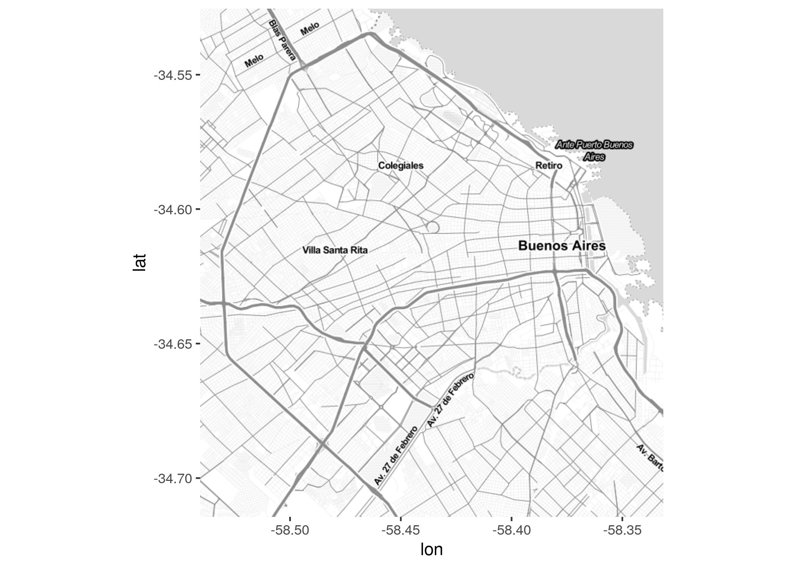
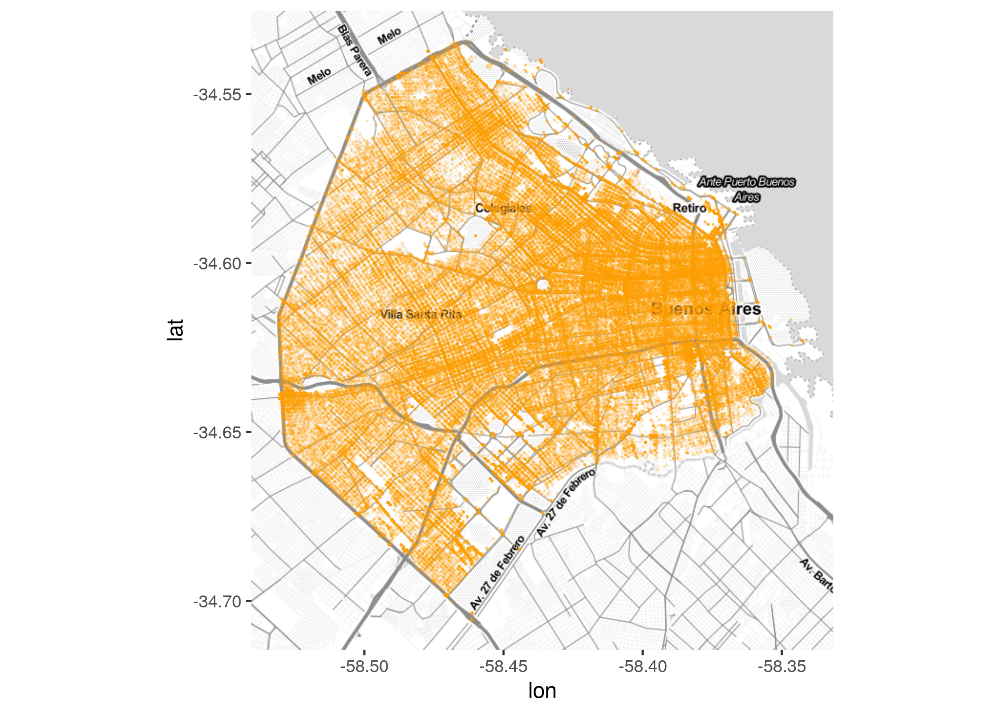

Capítulo 6 Analizando movimiento: el flujo de viajes urbanos
Los sistemas urbanos se caracterizan por dinámicas continuas de flujo, como el viaje de las personas entre su lugar de trabajo y de residencia. Estas dinámicas son capturadas en diversas bases de datos con creciente grado de granularidad espacio-temporal. La disponibilidad de coordenadas precisas de origen y destino, combinada con la posibilidad de acceder a sistemas de ruteo en calles, nos permite estimar los trayectos realizado por personas y vehículos representados en bases de datos.
6.1 Estimando rutas
En general, los datos de flujo disponibles en datasets a escala metropolitana (en contraste con los datos personales como los de GPS) son simples pares origen/destino. Una ejemplo de datos abiertos de este tipo, es el de la ubicación y intercambio entre estaciones de sistemas de bicicletas compartidas.
Por ejemplo, el portal de datos abiertos de la Ciudad de Buenos Aires ofrece datasets con los trayectos realizados por los usuarios del sistema de bicicletas públicas, así como la ubicación de las estaciones.
Si no lo hemos hecho aún, carguemos las librerías que vamos a necesitar.
Utilizaremos una porción de todos los trayectos disponibles, los que representan viajes en bicicletas públicas realizados durante el mes de abril de 2017:
## # A tibble: 113,650 x 6
## HORA ORIGEN_ESTACION NOMBRE_ORIGEN DESTINO_ESTACION
## <dttm> <dbl> <chr> <dbl>
## 1 2017-04-01 00:00:00 1 FACULTAD DE … 42
## 2 2017-04-01 00:00:00 5 PLAZA ITALIA 14
## 3 2017-04-01 00:00:00 5 PLAZA ITALIA 20
## 4 2017-04-01 00:00:00 5 PLAZA ITALIA 69
## 5 2017-04-01 00:00:00 5 PLAZA ITALIA 94
## 6 2017-04-01 00:00:00 5 PLAZA ITALIA 123
## 7 2017-04-01 00:00:00 6 PARQUE LEZAMA 17
## 8 2017-04-01 00:00:00 6 PARQUE LEZAMA 28
## 9 2017-04-01 00:00:00 6 PARQUE LEZAMA 118
## 10 2017-04-01 00:00:00 8 CONGRESO 1
## # … with 113,640 more rows, and 2 more variables: NOMBRE_DESTINO <chr>,
## # TOTAL <dbl>También descargamos un archivo de información geográfica con la posición de cada estación de bicicletas públicas:
## X Y NOMBRE
## 1 -58.39245 -34.58313 FACULTAD DE DERECHO
## 2 -58.37482 -34.59259 RETIRO
## 3 -58.36892 -34.61124 ADUANA
## 4 -58.36895 -34.60172 PLAZA ROMA
## 5 -58.36971 -34.62830 PARQUE LEZAMA
## 6 -58.42100 -34.58013 PLAZA ITALIA
## 7 -58.38099 -34.60584 OBELISCO
## 8 -58.38925 -34.60993 CONGRESO
## 9 -58.40714 -34.58391 PARQUE LAS HERAS
## 10 -58.36575 -34.61555 PUERTO MADERO - UCA
## 11 -58.38502 -34.60131 TRIBUNALES
## 12 -58.38895 -34.59318 PLAZA VICENTE LOPEZ
## 13 -58.40660 -34.60962 ONCE
## 14 -58.42632 -34.57779 PACIFICO
## 15 -58.39852 -34.59919 PLAZA HOUSSAY
## 16 -58.37472 -34.60996 LEGISLATURA (EX PLAZA DE MAYO)
## 17 -58.41883 -34.60640 PLAZA ALMAGRO
## 18 -58.38048 -34.61737 INDEPENDENCIA
## 19 -58.37755 -34.59540 PLAZA SAN MARTIN
## 20 -58.44179 -34.58004 DISTRITO AUDIOVISUAL
## 21 -58.38257 -34.59410 ARENALES
## 22 -58.37957 -34.60030 SUIPACHA
## 23 -58.38077 -34.61057 ALSINA
## 24 -58.41607 -34.58952 PLAZA GUEMES
## 25 -58.36360 -34.60100 JUANA MANSO
## 26 -58.38990 -34.59957 MONTEVIDEO
## 27 -58.41240 -34.62285 PLAZA BOEDO
## 28 -58.43458 -34.60846 PARQUE CENTENARIO
## 29 -58.40661 -34.64003 PARQUE PATRICIOS
## 30 -58.39738 -34.59039 PEÑA
## 31 -58.37353 -34.60773 CATEDRAL
## 32 -58.37186 -34.59633 INGENIERO BUTTY
## 33 -58.37660 -34.60537 MAIPU
## 34 -58.37786 -34.60791 PIEDRAS
## 35 -58.38290 -34.59699 PLAZA LIBERTAD
## 36 -58.40759 -34.63652 URQUIZA
## 37 -58.39872 -34.59713 FACULTAD DE MEDICINA
## 38 -58.37416 -34.59958 GALERIAS PACIFICO
## 39 -58.37337 -34.60440 SARMIENTO
## 40 -58.41459 -34.57549 ZOOLOGICO
## 41 -58.38245 -34.60159 TUCUMAN
## 42 -58.37439 -34.61638 CHILE
## 43 -58.37690 -34.59852 CORDOBA
## 44 -58.37428 -34.59588 RICARDO ROJAS
## 45 -58.37965 -34.60464 DIAGONAL NORTE
## 46 -58.37116 -34.60164 25 DE MAYO
## 47 -58.38540 -34.60665 RIVAROLA
## 48 -58.37058 -34.61338 BELGRANO
## 49 -58.41467 -34.60709 SANCHEZ DE BUSTAMANTE
## 50 -58.42627 -34.60743 HOSPITAL ITALIANO
## 51 -58.41150 -34.59022 CORONEL DIAZ
## 52 -58.41594 -34.58722 JULIAN ALVAREZ
## 53 -58.37159 -34.60549 PERON
## 54 -58.43463 -34.57519 MINISTRO CARRANZA
## 55 -58.42507 -34.58937 PLAZA PALERMO VIEJO
## 56 -58.39493 -34.60757 AYACUCHO
## 57 -58.39444 -34.59415 RIOBAMBA
## 58 -58.43971 -34.60316 PADILLA
## 59 -58.44944 -34.59182 GUZMAN
## 60 -58.38284 -34.60300 CERRITO
## 61 -58.43424 -34.60457 INSTITUTO LELOIR
## 62 -58.37356 -34.61078 COLEGIO NACIONAL BUENOS AIRES
## 63 -58.37083 -34.60909 MINISTERIO DE ECONOMIA
## 64 -58.37817 -34.60209 ESMERALDA
## 65 -58.40436 -34.59586 ECUADOR
## 66 -58.37455 -34.61365 VENEZUELA
## 67 -58.37272 -34.59947 RECONQUISTA
## 68 -58.43562 -34.59628 MALABIA
## 69 -58.41158 -34.60289 CARLOS GARDEL
## 70 -58.42827 -34.60082 YATAY
## 71 -58.39755 -34.61749 PASCO
## 72 -58.37088 -34.61585 BALCARCE
## 73 -58.37812 -34.61171 MORENO
## 74 -58.37254 -34.59475 DELLA PAOLERA
## 75 -58.39547 -34.60229 LAVALLE
## 76 -58.40903 -34.59462 AGUERO
## 77 -58.41386 -34.59463 BILLINGHURST
## 78 -58.42582 -34.59267 ARAOZ
## 79 -58.36962 -34.59934 BOUCHARD
## 80 -58.39079 -34.58781 QUINTANA
## 81 -58.40115 -34.58368 HOSPITAL RIVADAVIA
## 82 -58.40423 -34.61287 MISIONES
## 83 -58.38034 -34.59142 SUIPACHA Y ARROYO
## 84 -58.43032 -34.62413 DOBLAS
## 85 -58.42548 -34.63850 SENILLOSA
## 86 -58.43154 -34.61983 GUAYAQUIL
## 87 -58.42740 -34.63525 AVELINO DIAZ
## 88 -58.42242 -34.62882 TREINTA Y TRES ORIENTALES
## 89 -58.40172 -34.62136 SAAVEDRA
## 90 -58.39332 -34.58915 CEMENTERIO DE LA RECOLETA
## 91 -58.36397 -34.61172 AZUCENA VILLAFLOR
## 92 -58.36309 -34.61808 VERA PEÑALOZA
## 93 -58.40283 -34.61681 MEXICO
## 94 -58.39590 -34.61520 RINCON
## 95 -58.40502 -34.63172 SALCEDO
## 96 -58.39483 -34.61127 SARANDI
## 97 -58.39890 -34.61212 PLAZA PRIMERO DE MAYO
## 98 -58.40911 -34.61755 HOSPITAL RAMOS MEJIA
## 99 -58.36091 -34.61181 AIME PAINE
## 100 -58.44290 -34.59981 ACEVEDO
## 101 -58.44242 -34.58905 FITZ ROY
## 102 -58.35626 -34.62878 USINA DEL ARTE
## 103 -58.41552 -34.61188 DON BOSCO
## 104 -58.35913 -34.61749 JULIETA LANTERI
## 105 -58.41968 -34.60206 HUMAHUACA
## 106 -58.38691 -34.60162 URUGUAY
## 107 -58.38077 -34.61239 9 DE JULIO
## 108 -58.39768 -34.58837 EMILIO MITRE
## 109 -58.36823 -34.60413 PLAZA HIPOLITO BOUCHARD
## 110 -58.37368 -34.60312 CORRIENTES
## 111 -58.37976 -34.59646 MARCELO T. DE ALVEAR
## 112 -58.38143 -34.61536 LIMA
## 113 -58.41210 -34.60022 GALLO
## 114 -58.36676 -34.61807 FACULTAD DE INGENIERIA
## 115 -58.37811 -34.60372 ESMERALDA Y CORRIENTES
## 116 -58.40096 -34.63398 15 DE NOVIEMBRE
## 117 -58.42170 -34.59822 ACUÑA DE FIGUEROA
## 118 -58.43677 -34.59271 CASTILLO
## 119 -58.41546 -34.60176 GUARDIA VIEJA
## 120 -58.42041 -34.59162 COSTA RICA
## 121 -58.42959 -34.59669 LERMA
## 122 -58.39937 -34.58712 GUTIERREZ
## 123 -58.40579 -34.60178 PUEYRREDON
## 124 -58.42520 -34.58567 GUATEMALA
## 125 -58.43495 -34.60016 VELASCO
## 126 -58.42878 -34.61506 HIPOLITO YRIGOYEN
## 127 -58.42104 -34.58542 ARMENIA
## 128 -58.41231 -34.58108 UGARTECHE
## 129 -58.41315 -34.63331 VIRREY LINIERS
## 130 -58.41578 -34.63515 LAS CASAS
## 131 -58.36093 -34.63407 PINZON
## 132 -58.40531 -34.58247 CABELLO
## 133 -58.36943 -34.63997 MINISTERIO DE JUSTICIA Y SEGURIDAD
## 134 -58.45506 -34.58755 FEDERICO LACROZE
## 135 -58.37171 -34.63081 RUY DIAZ DE GUZMAN
## 136 -58.38091 -34.60823 RIVADAVIA Y 9 DE JULIO
## 137 -58.37475 -34.62206 PLAZA CECILIA GRIERSON
## 138 -58.43784 -34.58047 RAVIGNANI
## 139 -58.41191 -34.59270 BILLINGHURST Y MANSILLA
## 140 -58.44510 -34.59284 VILLARROEL
## 141 -58.36208 -34.63069 JUAN MANUEL BLANES
## 142 -58.38842 -34.60300 PARANA
## 143 -58.37098 -34.62561 BRASIL
## 144 -58.40779 -34.62219 HOSPITAL FRANCES
## 145 -58.39477 -34.62060 CARLOS CALVO
## 146 -58.36300 -34.60497 MACACHA GUEMES
## 147 -58.40353 -34.57741 MALBA
## 148 -58.42021 -34.57296 GODOY CRUZ Y LIBERTADOR
## 149 -58.43523 -34.57819 RAVIGNANI Y GUATEMALA
## 150 -58.38777 -34.63495 HOSPITAL BRITANICO
## 151 -58.37429 -34.59194 RETIRO II
## 152 -58.37421 -34.59185 RETIRO III
## 153 -58.39594 -34.63044 HOSPITAL GARRAHAN
## 154 -58.43438 -34.58104 NICARAGUA
## 155 -58.41576 -34.60464 BILLINGHURST Y VALENTIN GOMEZ
## 156 -58.36747 -34.61593 AZOPARDO Y CHILE
## 157 -58.42822 -34.58348 ORO
## 158 -58.37422 -34.61994 HUMBERTO PRIMO
## 159 -58.40260 -34.59210 HOSPITAL ALEMAN
## 160 -58.39041 -34.61184 SOLIS Y ALSINA
## 161 -58.45293 -34.59221 SANTOS DUMONT Y OTERO
## 162 -58.42889 -34.59055 ARMENIA Y GORRITI
## 163 -58.37910 -34.62746 CONSTITUCION I
## 164 -58.37923 -34.62749 CONSTITUCION II
## 165 -58.41256 -34.64173 PARQUE JOSE EVARISTO URIBURU
## 166 -58.40662 -34.60936 ONCE II
## 167 -58.42795 -34.62831 SENILLOSA Y ZUVIRIA
## 168 -58.43740 -34.58504 GORRITI
## 169 -58.40195 -34.60924 LARREA Y BARTOLOME MITRE
## 170 -58.40597 -34.59973 SAN LUIS Y ECUADOR
## 171 -58.40785 -34.59776 PLAZA MONSEÑOR MIGUEL DE ANDREA
## 172 -58.38128 -34.61862 ESTADOS UNIDOS
## 173 -58.39953 -34.60324 PASTEUR
## 174 -58.40797 -34.57785 PLAZA ALEMANIA
## 175 -58.41192 -34.61202 FACULTAD DE PSICOLOGIA
## 176 -58.39155 -34.59726 MINISTERIO DE EDUCACION
## 177 -58.41216 -34.56807 PLANETARIO
## 178 -58.42487 -34.62346 JOSE MARMOL
## 179 -58.42047 -34.61980 CASTRO Y MEXICO
## 180 -58.38969 -34.61564 VIRREY CEVALLOS
## 181 -58.42178 -34.63137 AV PAVON Y 33 ORIENTALES
## 182 -58.40714 -34.61255 CATAMARCA
## 183 -58.38562 -34.59780 TALCAHUANO
## 184 -58.40597 -34.59111 ARENALES Y AGUERO
## 185 -58.42257 -34.60595 PERON Y FRANCISCO ACUÑA DE FIGUEROA
## 186 -58.43351 -34.61080 ARANGUREN
## 187 -58.39132 -34.63068 PEDRO ECHAGUE
## 188 -58.38559 -34.58847 POSADAS
## 189 -58.43179 -34.61767 PARQUE RIVADAVIA
## 190 -58.38745 -34.62705 PLAZA GARAY
## 191 -58.41123 -34.58508 JUNCAL
## 192 -58.42348 -34.61360 QUINTINO BOCAYUVA
## 193 -58.41588 -34.62244 ESTADOS UNIDOS Y BOEDO
## 194 -58.40414 -34.63438 HOSPITAL SARDA
## 195 -58.36602 -34.62778 HOSPITAL ARGERICH
## 196 -58.38765 -34.60899 CONGRESO II
## 197 -58.44599 -34.58644 ROSETI
## 198 -58.40436 -34.58819 AUSTRIA Y FRENCH
## 199 -58.36040 -34.63911 LA BOCA
## DOMICILIO
## 1 AV. PRES.FIGUEROA ALCORTA Y JUAN A.BIBILONI
## 2 AV. DR.JOSE RAMOS MEJIA Y DEL LIBERTADOR AV
## 3 AV. ING.HUERGO Y AV. BELGRANO
## 4 LAVALLE Y BOUCHARD
## 5 AV MARTIN GARCIA E IRALA
## 6 AV. SANTA FE Y AV. SARMIENTO
## 7 AV. 9 DE JULIO Y TTE. GRAL JUAN DOMINGO PERON
## 8 AV. HIPOLITO YRIGOYEN Y VIRREY CEBALLOS
## 9 PARQUE LAS HERAS
## 10 MOREAU DE JUSTO 1500
## 11 TRIBUNALES
## 12 PLAZA VICENTE LOPEZ
## 13 PLAZA MISERERE
## 14 PACIFICO
## 15 PLAZA HOUSSAY
## 16 PERU Y DIAGONAL SUR
## 17 PLAZA ALMAGRO
## 18 AV. INDEPENDENCIA Y 9 DE JULIO
## 19 PLAZA SAN MARTIN
## 20 ZAPIOLA Y DORREGO
## 21 ARENALES Y CERRITO
## 22 SUIPACHA Y VIAMONTE
## 23 ADOLFO ALSINA Y BERNARDO DE IRIGOYEN
## 24 SALGUERO JERONIMO Y MANSILLA
## 25 EMMA DE LA BARRA Y JUANA MANSO
## 26 AV. CORDOBA Y MONTEVIDEO
## 27 CARLOS CALVO ENTRE VIRREY LINIERS Y SANCHEZ DE LORIA
## 28 PATRICIAS ARGENTINAS Y CARLOS FINLAY
## 29 IGUAZU Y USPALLATA
## 30 AZCUENAGA Y PEÑA
## 31 SAN MARTIN Y RIVADAVIA
## 32 ING. BUTTY Y LEANDRO N. ALEM
## 33 MAIPU Y SARMIENTO
## 34 ESMERALDA Y RIVADAVIA
## 35 CERRITO Y MARCELO T. DE ALVEAR
## 36 GRAL URQUIZA Y RONDEAU
## 37 URIBURU Y MARCELO T. DE ALVEAR
## 38 SAN MARTIN 710, ENTRE VIAMONTE Y CORDOBA
## 39 SARMIENTO 481, ENTRE RECONQUISTA Y SAN MARTIN
## 40 AV DEL LIBERTADOR Y AV SARMIENTO
## 41 TUCUMAN Y CERRITO
## 42 PERU 726
## 43 MAIPU 820
## 44 SAN MARTIN 1031
## 45 ROQUE SAENZ PEÑA Y SUIPACHA
## 46 25 DE MAYO Y LAVALLE
## 47 DR. RODOLFO RIVAROLA 175 ENTRE TTE. GRAL. JUAN DOMINGO PERON Y BARTOLOME MITRE
## 48 BALCARCE 482 ENTRE BELGRANO Y VENEZUELA
## 49 SANCHEZ DE BUSTAMANTE Y PERON JUAN
## 50 RAWSON ENTRE POTOSI Y DIAZ VELEZ
## 51 GÜEMES 3328 Y CORONEL DIAZ
## 52 GÜEMES 3822 ENTRE JULIAN ALVAREZ Y ARAOZ
## 53 PERON JUAN ENTRE 25 DE MAYO Y RECONQUISTA
## 54 SANTA FE 5327 ENTRE DORREGO Y AREVALO
## 55 COSTA RICA Y MALABIA
## 56 AYACUCHO ENTRE PERON JUAN Y BARTOLOME MITRE
## 57 RIOBAMBA Y JUNCAL
## 58 PADILLA Y WARNES AV
## 59 GUZMAN Y LEIVA
## 60 AV. ROQUE SAENZ PEÑA 1149 ENTRE LIBERTAD Y CERRITO
## 61 AV. PATRICIAS ARGENTINAS 401, ENTRE JUANA DE IBARBOUROU Y AV. MACHADO
## 62 BOLIVAR ENTRE ADOLFO ALSINA Y MORENO
## 63 BALCARCE 101 ENTRE AV. HIPOLITO YRIGOYEN Y ALSINA
## 64 ESMERALDA 510
## 65 ECUADOR 1200 Y MANSILLA
## 66 PERU 490 Y VENEZUELA
## 67 RECONQUISTA 716 Y AV CORDOBA
## 68 MALABIA 780 Y LOYOLA
## 69 GUARDIA VIEJA 3302
## 70 YATAY 925 ENTRE HUMAHUACA Y GUARDIA VIEJA
## 71 PASCO 708 ENTRE CHILE Y AV INDEPENDENCIA
## 72 BALCARCE 683 ENTRE CHILE Y DEFENSA
## 73 MORENO 834 ENTRE TACUARI Y PIEDRAS
## 74 CARLOS M. DELLA PAOLERA 297 ENTRE LEANDRO N ALEM Y EDUARDO MADERO
## 75 AYACUCHO 595 ENTRE TUCUMAN Y LAVALLE
## 76 AGUERO Y MANSILLA
## 77 DE LA CARCOVA 3508
## 78 ARAOZ 1413 ENTRE GORRITI Y HONDURAS
## 79 VIAMONTE 101 Y BOUCHARD
## 80 MANUEL QUINTANA 600
## 81 LUCENA PEREYRA 2516 ENTRE LAS HERAS Y PAGANO
## 82 MISIONES ENTRE ADOLFO ALSINA Y MORENO
## 83 ARROYO Y SUIPACHA
## 84 DOBLAS 608 Y VALLE
## 85 SENILLOSA 1905 Y ZAÑARTU
## 86 GUAYAQUIL 213 Y DOBLAS
## 87 AVELINO DIAZ 499 Y DOBLAS
## 88 CONSTITUCION 4101 Y TREINTA Y TRES ORIENTALES
## 89 SAAVEDRA 1027 ENTRE CARLOS CALVO Y HUMBERTO 1º
## 90 VICENTE LOPEZ 2050 ENTRE JUNIN Y URIBURU
## 91 AZUCENA VILLAFLOR Y PIERINA DEALESSI
## 92 ROSARIO VERA PEÑALOZA Y OLGA COSSETTINI
## 93 SAAVEDRA Y MEXICO
## 94 VENEZUELA 2091 Y RINCON
## 95 SALCEDO 2908 Y DEAN FUNES
## 96 SARANDI ENTRE ADOLFO ALSINA E HIPOLITO YRIGOYEN
## 97 PICHINCHA ENTRE ADOLFO ALSINA Y MORENO
## 98 AGRELO ENTRE GRAL. URQUIZA, Y GRAL. LA RIOJA
## 99 AZUCENA VILLAFLOR 553 ENTRE CALABRIA Y AIME PAINE
## 100 ACEVEDO Y PADILLA
## 101 FITZ ROY 1092 Y LOYOLA
## 102 CAFFARENA AGUSTIN Y DON PEDRO DE MENDOZA
## 103 DON BOSCO Y VIRREY LINIERS
## 104 VERA PEÑALOSA ENTRE CALABRIA Y JULIETA LANTERI
## 105 HUMAHUACA 3918
## 106 TUCUMAN Y URUGUAY
## 107 9 DE JULIO Y MORENO
## 108 PLAZA EMILIO MITRE - LARREA Y PACHECO DE MELO
## 109 PLAZA HIPOLITO BOUCHARD - AV EDUARDO MADERO Y PERON JUAN
## 110 AV CORRIENTES Y SAN MARTIN
## 111 MARCELO T DE ALVEAR Y SUIPACHA
## 112 LIMA Y MEXICO
## 113 GALLO Y TUCUMAN
## 114 ESTADOS UNIDOS ENTRE AZOPARDO Y HUERGO AV
## 115 ESMERALDA Y AV CORRIENTES
## 116 15 DE NOVIEMBRE DE 1889 2687 ENTRE CATAMARCA Y JUJUY
## 117 LAVALLE Y ACUÑA DE FIGUEROA
## 118 CASTILLO 815 ENTRE THAMES Y SERRANO
## 119 GUARDIA VIEJA 3606 ENTRE BILLINGHURST Y MARIO BRAVO
## 120 COSTA RICA 4090 Y ACUÑA DE FIGUEROA
## 121 LERMA 185 Y JULIAN ALVAREZ
## 122 JUAN MARIA GUTIERREZ ENTRE AGUERO Y LAPRIDA
## 123 BOULOGNE SUR MER Y TUCUMAN
## 124 GUATEMALA 4799 ENTRE J.L. BORGES Y GURRUCHAGA
## 125 VELASCO 285 ENTRE JULIAN ALVAREZ Y LAVALLEJA
## 126 HIPOLITO YRIGOYEN ENTRE MUÑIZ Y LA PLATA
## 127 ARMENIA 2393 Y CHARCAS
## 128 UGARTECHE ENTRE CABELLO Y LAS HERAS
## 129 SALCEDO 3401 Y VIRREY LINIERS
## 130 LAS CASAS 3587 ENTRE AV. BOEDO Y ALZAGA
## 131 PINZON 469 Y MARTIN RODRIGUEZ
## 132 CABELLO ENTRE CNEL DIAZ Y ORTIZ DE OCAMPO
## 133 REGIMIENTO DE PATRICIOS Y ARAOZ DE LAMADRID
## 134 AV CORRIENTES 6800 Y FEDERICO LACROZE
## 135 RUY DIAZ DE GUZMAN Y AV. MARTIN GARCIA
## 136 RIVADAVIA Y CARLOS PELLEGRINI
## 137 AV SAN JUAN 632
## 138 RAVIGNANI 1883 Y COSTA RICA
## 139 BILLINGHURST 1533 Y MANSILLA
## 140 VILLARROEL Y HUMBOLDT
## 141 JUAN MANUEL BLANES 383
## 142 LAVALLE ENTTRE MONTEVIDEO Y PARANA
## 143 BRASIL Y DEFENSA
## 144 HOSPITAL FRANCES: CARLOS CALVO Y LA RIOJA
## 145 CARLOS CALVO Y SARANDI
## 146 MACACHA GUEMES Y JUANA MANSO
## 147 AV FIGUEROA ALCORTA Y SAN MARTIN DE TOURS
## 148 GODOY CRUZ 3291 ENTRE AV DEL LIBERTADOR Y SEGUI
## 149 RAVIGNANI 2171 Y GUATEMALA
## 150 PERDRIEL Y FINOCHIETTO ENRIQUE
## 151 PLAZA FUERZA AEREA: AV. DR. J. RAMOS MEJIA Y AV DEL LIBERTADOR
## 152 PLAZA FUERZA AEREA: AV. DR. J. RAMOS MEJIA Y AV DEL LIBERTADOR
## 153 HOSPITAL GARRAHAN: AV BRASIL Y PICHINCHA
## 154 NICARAGUA 5690 ENTRE BONPLAND Y FITZ ROY
## 155 BILLINGHURST 455 Y VALENTIN GOMEZ
## 156 AZOPARDO 700 Y CHILE
## 157 FRAY JUSTO SANTAMARIA DE ORO Y GUATEMALA
## 158 PERU 1016 ENTRE HUMBERTO PRIMO Y CARLOS CALVO
## 159 BERUTI Y ECUADOR
## 160 SOLIS 225 Y ADOLFO ALSINA
## 161 SANTOS DUMONT 4380 Y OTERO
## 162 ARMENIA 1525 ENTRE GORRITI Y HONDURAS
## 163 AV BRASIL 1050 Y LIMA
## 164 AV BRASIL 1060 Y LIMA
## 165 PQUE. JOSE E. URIBURU - ALMAFUERTE 300
## 166 BARTOLOME MITRE Y AV PUEYRREDON
## 167 SENILLOSA 989 Y ZUVIRIA
## 168 FITZ ROY 1590 Y GORRITI
## 169 LARREA ENTRE BARTOLOME MITRE Y AV RIVADAVIA
## 170 SAN LUIS 2862 ENTRE ECUADOR Y BOULOGNE SUR MER
## 171 PLAZA MONSEÑOR MIGUEL DE ANDREA (ANCHORENA 900)
## 172 ESTADOS UNIDOS Y LIMA
## 173 PASTEUR 501 ENTRE TUCUMAN Y LAVALLE
## 174 PLAZA ALEMANIA: DEL LIBERTADOR AV Y CAVIA
## 175 HIPOLITO YRIGOYEN Y 24 DE NOVIEMBRE
## 176 MARCELO T DE ALVEAR 1698 Y RODRIGUEZ PEÑA
## 177 AV. ROLDAN, BELISARIO Y AV. SARMIENTO
## 178 JOSE MARMOL 803 Y ESTADOS UNIDOS
## 179 CASTRO 680 ENTRE MEXICO Y AGRELO
## 180 MEXICO 1652 ENTRE VIRREY CEVALLOS Y SOLIS
## 181 33 ORIENTALES 1439, ENTRE AV. PAVON Y AV. GARAY
## 182 ADOLFO ALSINA 2910 Y CATAMARCA
## 183 TALCAHUANO 1034 Y MARCELO T DE ALVEAR
## 184 ARENALES 2882 Y AGUERO
## 185 PERON, JUAN DOMINGO TTE 3989 ENTRE FRANCISCO ACUÑA DE FIGUEROA Y MEDRANO
## 186 ARANGUREN 188 ENTRE PORTUGAL Y EDUARDO ACEVEDO
## 187 PEDRO ECHAGUE 1878 ENTRE COMBATE DE LOS POZOS Y AV ENTRE RIOS
## 188 POSADAS 1350 ENTRE MONTEVIDEO Y RODRIGUEZ PEÑA
## 189 CHACO 250
## 190 AV JUAN DE GARAY Y LUIS SAENZ PEÑA
## 191 JUNCAL 3320 Y JERONIMO SALGUERO
## 192 QUINTINO BOCAYUVA Y DON BOSCO
## 193 ESTADOS UNIDOS 3568 ENTRE BOEDO Y MAZA
## 194 CATULO CASTILLO 2896 Y DEAN FUNES
## 195 PI Y MARGALL 750 ENTRE NECOCHEA Y ALTE. BROWN
## 196 AV RIVADAVIA Y PARANA
## 197 ROSETI 50 Y AV DORREGO
## 198 AUSTRIA 2080 ENTRE FRENCH Y JUNCAL
## 199 DON PEDRO DE MENDOZA 1819
## IMAGEN AUTOMAT
## 1 ESTACION_AUTOMATICA.PNG AUTOMATICA
## 2 ESTACION_AUTOMATICA.PNG AUTOMATICA
## 3 ESTACION_AUTOMATICA.PNG AUTOMATICA
## 4 ESTACION_AUTOMATICA.PNG AUTOMATICA
## 5 ESTACION_AUTOMATICA.PNG AUTOMATICA
## 6 ESTACION_AUTOMATICA.PNG AUTOMATICA
## 7 ESTACION_AUTOMATICA.PNG AUTOMATICA
## 8 ESTACION_AUTOMATICA.PNG AUTOMATICA
## 9 ESTACION_AUTOMATICA.PNG AUTOMATICA
## 10 ESTACION_AUTOMATICA.PNG AUTOMATICA
## 11 ESTACION_AUTOMATICA.PNG AUTOMATICA
## 12 ESTACION_AUTOMATICA.PNG AUTOMATICA
## 13 ESTACION_AUTOMATICA.PNG AUTOMATICA
## 14 ESTACION_AUTOMATICA.PNG AUTOMATICA
## 15 ESTACION_AUTOMATICA.PNG AUTOMATICA
## 16 ESTACION_AUTOMATICA.PNG AUTOMATICA
## 17 ESTACION_AUTOMATICA.PNG AUTOMATICA
## 18 ESTACION_AUTOMATICA.PNG AUTOMATICA
## 19 ESTACION_AUTOMATICA.PNG AUTOMATICA
## 20 ESTACION_AUTOMATICA.PNG AUTOMATICA
## 21 ESTACION_AUTOMATICA.PNG AUTOMATICA
## 22 ESTACION_AUTOMATICA.PNG AUTOMATICA
## 23 ESTACION_AUTOMATICA.PNG AUTOMATICA
## 24 ESTACION_AUTOMATICA.PNG AUTOMATICA
## 25 ESTACION_AUTOMATICA.PNG AUTOMATICA
## 26 ESTACION_AUTOMATICA.PNG AUTOMATICA
## 27 ESTACION_AUTOMATICA.PNG AUTOMATICA
## 28 ESTACION_AUTOMATICA.PNG AUTOMATICA
## 29 ESTACION_AUTOMATICA.PNG AUTOMATICA
## 30 ESTACION_AUTOMATICA.PNG AUTOMATICA
## 31 ESTACION_AUTOMATICA.PNG AUTOMATICA
## 32 ESTACION_AUTOMATICA.PNG AUTOMATICA
## 33 ESTACION_AUTOMATICA.PNG AUTOMATICA
## 34 ESTACION_AUTOMATICA.PNG AUTOMATICA
## 35 ESTACION_AUTOMATICA.PNG AUTOMATICA
## 36 ESTACION_AUTOMATICA.PNG AUTOMATICA
## 37 ESTACION_AUTOMATICA.PNG AUTOMATICA
## 38 ESTACION_AUTOMATICA.PNG AUTOMATICA
## 39 ESTACION_AUTOMATICA.PNG AUTOMATICA
## 40 ESTACION_AUTOMATICA.PNG AUTOMATICA
## 41 ESTACION_AUTOMATICA.PNG AUTOMATICA
## 42 ESTACION_AUTOMATICA.PNG AUTOMATICA
## 43 ESTACION_AUTOMATICA.PNG AUTOMATICA
## 44 ESTACION_AUTOMATICA.PNG AUTOMATICA
## 45 ESTACION_AUTOMATICA.PNG AUTOMATICA
## 46 ESTACION_AUTOMATICA.PNG AUTOMATICA
## 47 ESTACION_AUTOMATICA.PNG AUTOMATICA
## 48 ESTACION_AUTOMATICA.PNG AUTOMATICA
## 49 ESTACION_AUTOMATICA.PNG AUTOMATICA
## 50 ESTACION_AUTOMATICA.PNG AUTOMATICA
## 51 ESTACION_AUTOMATICA.PNG AUTOMATICA
## 52 ESTACION_AUTOMATICA.PNG AUTOMATICA
## 53 ESTACION_AUTOMATICA.PNG AUTOMATICA
## 54 ESTACION_AUTOMATICA.PNG AUTOMATICA
## 55 ESTACION_AUTOMATICA.PNG AUTOMATICA
## 56 ESTACION_AUTOMATICA.PNG AUTOMATICA
## 57 ESTACION_AUTOMATICA.PNG AUTOMATICA
## 58 ESTACION_AUTOMATICA.PNG AUTOMATICA
## 59 ESTACION_AUTOMATICA.PNG AUTOMATICA
## 60 ESTACION_AUTOMATICA.PNG AUTOMATICA
## 61 ESTACION_AUTOMATICA.PNG AUTOMATICA
## 62 ESTACION_AUTOMATICA.PNG AUTOMATICA
## 63 ESTACION_AUTOMATICA.PNG AUTOMATICA
## 64 ESTACION_AUTOMATICA.PNG AUTOMATICA
## 65 ESTACION_AUTOMATICA.PNG AUTOMATICA
## 66 ESTACION_AUTOMATICA.PNG AUTOMATICA
## 67 ESTACION_AUTOMATICA.PNG AUTOMATICA
## 68 ESTACION_AUTOMATICA.PNG AUTOMATICA
## 69 ESTACION_AUTOMATICA.PNG AUTOMATICA
## 70 ESTACION_AUTOMATICA.PNG AUTOMATICA
## 71 ESTACION_AUTOMATICA.PNG AUTOMATICA
## 72 ESTACION_AUTOMATICA.PNG AUTOMATICA
## 73 ESTACION_AUTOMATICA.PNG AUTOMATICA
## 74 ESTACION_AUTOMATICA.PNG AUTOMATICA
## 75 ESTACION_AUTOMATICA.PNG AUTOMATICA
## 76 ESTACION_AUTOMATICA.PNG AUTOMATICA
## 77 ESTACION_AUTOMATICA.PNG AUTOMATICA
## 78 ESTACION_AUTOMATICA.PNG AUTOMATICA
## 79 ESTACION_AUTOMATICA.PNG AUTOMATICA
## 80 ESTACION_AUTOMATICA.PNG AUTOMATICA
## 81 ESTACION_AUTOMATICA.PNG AUTOMATICA
## 82 ESTACION_AUTOMATICA.PNG AUTOMATICA
## 83 ESTACION_AUTOMATICA.PNG AUTOMATICA
## 84 ESTACION_AUTOMATICA.PNG AUTOMATICA
## 85 ESTACION_AUTOMATICA.PNG AUTOMATICA
## 86 ESTACION_AUTOMATICA.PNG AUTOMATICA
## 87 ESTACION_AUTOMATICA.PNG AUTOMATICA
## 88 ESTACION_AUTOMATICA.PNG AUTOMATICA
## 89 ESTACION_AUTOMATICA.PNG AUTOMATICA
## 90 ESTACION_AUTOMATICA.PNG AUTOMATICA
## 91 ESTACION_AUTOMATICA.PNG AUTOMATICA
## 92 ESTACION_AUTOMATICA.PNG AUTOMATICA
## 93 ESTACION_AUTOMATICA.PNG AUTOMATICA
## 94 ESTACION_AUTOMATICA.PNG AUTOMATICA
## 95 ESTACION_AUTOMATICA.PNG AUTOMATICA
## 96 ESTACION_AUTOMATICA.PNG AUTOMATICA
## 97 ESTACION_AUTOMATICA.PNG AUTOMATICA
## 98 ESTACION_AUTOMATICA.PNG AUTOMATICA
## 99 ESTACION_AUTOMATICA.PNG AUTOMATICA
## 100 ESTACION_AUTOMATICA.PNG AUTOMATICA
## 101 ESTACION_AUTOMATICA.PNG AUTOMATICA
## 102 ESTACION_AUTOMATICA.PNG AUTOMATICA
## 103 ESTACION_AUTOMATICA.PNG AUTOMATICA
## 104 ESTACION_AUTOMATICA.PNG AUTOMATICA
## 105 ESTACION_AUTOMATICA.PNG AUTOMATICA
## 106 ESTACION_AUTOMATICA.PNG AUTOMATICA
## 107 ESTACION_AUTOMATICA.PNG AUTOMATICA
## 108 ESTACION_AUTOMATICA.PNG AUTOMATICA
## 109 ESTACION_AUTOMATICA.PNG AUTOMATICA
## 110 ESTACION_AUTOMATICA.PNG AUTOMATICA
## 111 ESTACION_AUTOMATICA.PNG AUTOMATICA
## 112 ESTACION_AUTOMATICA.PNG AUTOMATICA
## 113 ESTACION_AUTOMATICA.PNG AUTOMATICA
## 114 ESTACION_AUTOMATICA.PNG AUTOMATICA
## 115 ESTACION_AUTOMATICA.PNG AUTOMATICA
## 116 ESTACION_AUTOMATICA.PNG AUTOMATICA
## 117 ESTACION_AUTOMATICA.PNG AUTOMATICA
## 118 ESTACION_AUTOMATICA.PNG AUTOMATICA
## 119 ESTACION_AUTOMATICA.PNG AUTOMATICA
## 120 ESTACION_AUTOMATICA.PNG AUTOMATICA
## 121 ESTACION_AUTOMATICA.PNG AUTOMATICA
## 122 ESTACION_AUTOMATICA.PNG AUTOMATICA
## 123 ESTACION_AUTOMATICA.PNG AUTOMATICA
## 124 ESTACION_AUTOMATICA.PNG AUTOMATICA
## 125 ESTACION_AUTOMATICA.PNG AUTOMATICA
## 126 ESTACION_AUTOMATICA.PNG AUTOMATICA
## 127 ESTACION_AUTOMATICA.PNG AUTOMATICA
## 128 ESTACION_AUTOMATICA.PNG AUTOMATICA
## 129 ESTACION_AUTOMATICA.PNG AUTOMATICA
## 130 ESTACION_AUTOMATICA.PNG AUTOMATICA
## 131 ESTACION_AUTOMATICA.PNG AUTOMATICA
## 132 ESTACION_AUTOMATICA.PNG AUTOMATICA
## 133 ESTACION_AUTOMATICA.PNG AUTOMATICA
## 134 ESTACION_AUTOMATICA.PNG AUTOMATICA
## 135 ESTACION_AUTOMATICA.PNG AUTOMATICA
## 136 ESTACION_AUTOMATICA.PNG AUTOMATICA
## 137 ESTACION_AUTOMATICA.PNG AUTOMATICA
## 138 ESTACION_AUTOMATICA.PNG AUTOMATICA
## 139 ESTACION_AUTOMATICA.PNG AUTOMATICA
## 140 ESTACION_AUTOMATICA.PNG AUTOMATICA
## 141 ESTACION_AUTOMATICA.PNG AUTOMATICA
## 142 ESTACION_AUTOMATICA.PNG AUTOMATICA
## 143 ESTACION_AUTOMATICA.PNG AUTOMATICA
## 144 ESTACION_AUTOMATICA.PNG AUTOMATICA
## 145 ESTACION_AUTOMATICA.PNG AUTOMATICA
## 146 ESTACION_AUTOMATICA.PNG AUTOMATICA
## 147 ESTACION_AUTOMATICA.PNG AUTOMATICA
## 148 ESTACION_AUTOMATICA.PNG AUTOMATICA
## 149 ESTACION_AUTOMATICA.PNG AUTOMATICA
## 150 ESTACION_AUTOMATICA.PNG AUTOMATICA
## 151 ESTACION_AUTOMATICA.PNG AUTOMATICA
## 152 ESTACION_AUTOMATICA.PNG AUTOMATICA
## 153 ESTACION_AUTOMATICA.PNG AUTOMATICA
## 154 ESTACION_AUTOMATICA.PNG AUTOMATICA
## 155 ESTACION_AUTOMATICA.PNG AUTOMATICA
## 156 ESTACION_AUTOMATICA.PNG AUTOMATICA
## 157 ESTACION_AUTOMATICA.PNG AUTOMATICA
## 158 ESTACION_AUTOMATICA.PNG AUTOMATICA
## 159 ESTACION_AUTOMATICA.PNG AUTOMATICA
## 160 ESTACION_AUTOMATICA.PNG AUTOMATICA
## 161 ESTACION_AUTOMATICA.PNG AUTOMATICA
## 162 ESTACION_AUTOMATICA.PNG AUTOMATICA
## 163 ESTACION_AUTOMATICA.PNG AUTOMATICA
## 164 ESTACION_AUTOMATICA.PNG AUTOMATICA
## 165 ESTACION_AUTOMATICA.PNG AUTOMATICA
## 166 ESTACION_AUTOMATICA.PNG AUTOMATICA
## 167 ESTACION_AUTOMATICA.PNG AUTOMATICA
## 168 ESTACION_AUTOMATICA.PNG AUTOMATICA
## 169 ESTACION_AUTOMATICA.PNG AUTOMATICA
## 170 ESTACION_AUTOMATICA.PNG AUTOMATICA
## 171 ESTACION_AUTOMATICA.PNG AUTOMATICA
## 172 ESTACION_AUTOMATICA.PNG AUTOMATICA
## 173 ESTACION_AUTOMATICA.PNG AUTOMATICA
## 174 ESTACION_AUTOMATICA.PNG AUTOMATICA
## 175 ESTACION_AUTOMATICA.PNG AUTOMATICA
## 176 ESTACION_AUTOMATICA.PNG AUTOMATICA
## 177 ESTACION_AUTOMATICA.PNG AUTOMATICA
## 178 ESTACION_AUTOMATICA.PNG AUTOMATICA
## 179 ESTACION_AUTOMATICA.PNG AUTOMATICA
## 180 ESTACION_AUTOMATICA.PNG AUTOMATICA
## 181 ESTACION_AUTOMATICA.PNG AUTOMATICA
## 182 ESTACION_AUTOMATICA.PNG AUTOMATICA
## 183 ESTACION_AUTOMATICA.PNG AUTOMATICA
## 184 ESTACION_AUTOMATICA.PNG AUTOMATICA
## 185 ESTACION_AUTOMATICA.PNG AUTOMATICA
## 186 ESTACION_AUTOMATICA.PNG AUTOMATICA
## 187 ESTACION_AUTOMATICA.PNG AUTOMATICA
## 188 ESTACION_AUTOMATICA.PNG AUTOMATICA
## 189 ESTACION_AUTOMATICA.PNG AUTOMATICA
## 190 ESTACION_AUTOMATICA.PNG AUTOMATICA
## 191 ESTACION_AUTOMATICA.PNG AUTOMATICA
## 192 ESTACION_AUTOMATICA.PNG AUTOMATICA
## 193 ESTACION_AUTOMATICA.PNG AUTOMATICA
## 194 ESTACION_AUTOMATICA.PNG AUTOMATICA
## 195 ESTACION_AUTOMATICA.PNG AUTOMATICA
## 196 ESTACION_AUTOMATICA.PNG AUTOMATICA
## 197 ESTACION_AUTOMATICA.PNG AUTOMATICA
## 198 ESTACION_AUTOMATICA.PNG AUTOMATICA
## 199 ESTACION_AUTOMATICA.PNG AUTOMATICA
## OBSERV
## 1 ABRIL 2015 (PASO DE SER MANUAL A AUTOMATICA)
## 2 ABRIL 2015 (PASO DE SER MANUAL A AUTOMATICA)
## 3 ABRIL 2015 (PASO DE SER MANUAL A AUTOMATICA)
## 4 ABRIL 2015 (PASO DE SER MANUAL A AUTOMATICA)
## 5 ABRIL 2015 (PASO DE SER MANUAL A AUTOMATICA)
## 6 ABRIL 2015 (PASO DE SER MANUAL A AUTOMATICA)
## 7 ABRIL 2015 (PASO DE SER MANUAL A AUTOMATICA)
## 8 ABRIL 2015 (PASO DE SER MANUAL A AUTOMATICA)
## 9 ABRIL 2015 (PASO DE SER MANUAL A AUTOMATICA)
## 10 ABRIL 2015 (PASO DE SER MANUAL A AUTOMATICA)
## 11 ABRIL 2015 (PASO DE SER MANUAL A AUTOMATICA)
## 12 ABRIL 2015 (PASO DE SER MANUAL A AUTOMATICA)
## 13 ABRIL 2015 (PASO DE SER MANUAL A AUTOMATICA)
## 14 ABRIL 2015 (PASO DE SER MANUAL A AUTOMATICA)
## 15 NUEVA ESTACION! - SE PASO DE MANUAL A AUTOMATICA EN JUNIO 2015
## 16 ABRIL 2015 (PASO DE SER MANUAL A AUTOMATICA)
## 17 ABRIL 2015 (PASO DE SER MANUAL A AUTOMATICA)
## 18 ABRIL 2015 (PASO DE SER MANUAL A AUTOMATICA)
## 19 ABRIL 2015 (PASO DE SER MANUAL A AUTOMATICA)
## 20 ABRIL 2015 (PASO DE SER MANUAL A AUTOMATICA)
## 21 ABRIL 2015 (PASO DE SER MANUAL A AUTOMATICA)
## 22 ABRIL 2015 (PASO DE SER MANUAL A AUTOMATICA)
## 23 ABRIL 2015 (PASO DE SER MANUAL A AUTOMATICA)
## 24 ABRIL 2015 (PASO DE SER MANUAL A AUTOMATICA)
## 25 ABRIL 2015 (PASO DE SER MANUAL A AUTOMATICA) - SE MODIFICO EL NOMBRE (EX EMMA DE LA BARRA)
## 26 ABRIL 2015 (PASO DE SER MANUAL A AUTOMATICA)
## 27 ABRIL 2015 (PASO DE SER MANUAL A AUTOMATICA)
## 28 ABRIL 2015 (PASO DE SER MANUAL A AUTOMATICA)
## 29 NUEVA ESTACION! - MAYO 2015
## 30 NUEVA ESTACION! - ABRIL DE 2015 (SE INCORPORA CON EL SISTEMA AUTOMATICO)
## 31 NUEVA ESTACION! - ABRIL DE 2015 (SE INCORPORA CON EL SISTEMA AUTOMATICO)
## 32 NUEVA ESTACION! - ABRIL DE 2015 (SE INCORPORA CON EL SISTEMA AUTOMATICO)
## 33 NUEVA ESTACION! - ABRIL DE 2015 (SE INCORPORA CON EL SISTEMA AUTOMATICO)
## 34 NUEVA ESTACION! - ABRIL DE 2015 (SE INCORPORA CON EL SISTEMA AUTOMATICO)
## 35 NUEVA ESTACION! - ABRIL DE 2015 (SE INCORPORA CON EL SISTEMA AUTOMATICO)
## 36 NUEVA ESTACION! - JULIO 2015
## 37 NUEVA ESTACION! - JUNIO 2015
## 38 NUEVA ESTACION! - JUNIO 2015
## 39 NUEVA ESTACION! - JUNIO 2015
## 40 NUEVA ESTACION! - JUNIO 2015
## 41 jul-15
## 42 NUEVA ESTACION! - JULIO 2015
## 43 NUEVA ESTACION! - JULIO 2015
## 44 NUEVA ESTACION! - JULIO 2015
## 45 NUEVA ESTACION! - AGOSTO 2015
## 46 NUEVA ESTACION! - AGOSTO 2015
## 47 NUEVA ESTACION! - SEPTIEMBRE 2015
## 48 NUEVA ESTACION! - SEPTIEMBRE 2015
## 49 NUEVA ESTACION! - SEPTIEMBRE 2015
## 50 NUEVA ESTACION! - FEBRERO 2016
## 51 NUEVA ESTACION! - FEBRERO 2016
## 52 NUEVA ESTACION! - FEBRERO 2016
## 53 NUEVA ESTACION! - AGOSTO 2015
## 54 NUEVA ESTACION! - OCTUBRE 2015
## 55 NUEVA ESTACION! - OCTUBRE 2015
## 56 NUEVA ESTACION! - ENERO 2016
## 57 NUEVA ESTACION! - ENERO 2016
## 58 NUEVA ESTACION! - ENERO 2016
## 59 NUEVA ESTACION! - ENERO 2016
## 60 NUEVA ESTACION! - FEBRERO 2016 (ANTES FIGURABA CON NOMBRE "LIBERTAD")
## 61 NUEVA ESTACION! - FEBRERO 2016
## 62 NUEVA ESTACION! - FEBRERO 2016
## 63 NUEVA ESTACION! - FEBRERO 2016
## 64 NUEVA ESTACION! - FEBRERO 2016
## 65 NUEVA ESTACION! - FEBRERO 2016
## 66 NUEVA ESTACION: 29/02/2016
## 67 NUEVA ESTACION: 29/02/2016
## 68 jun-16
## 69 jun-16
## 70 nov-16
## 71 jul-16
## 72 jun-16
## 73 jul-16
## 74 nov-16
## 75 jun-16
## 76 ene-16
## 77 jun-16
## 78 jun-16
## 79 jul-16
## 80 nov-16
## 81 ago-16
## 82 AGOSTO DE 2016
## 83 AGOSTO 2016 - EN JULIO DE 2017 CAMBIO SU NOMBRE Y UBICACION. ANTES ERA "ARROYO"
## 84 ago-16
## 85 ago-16
## 86 NUEVA! SEPTIEMBRE 2016
## 87 NUEVA! SEPTIEMBRE 2016
## 88 NUEVA! SEPTIEMBRE 2016
## 89 sep-16
## 90 INAUGURADA 3/10/2016
## 91 dic-16
## 92 dic-16
## 93 dic-16
## 94 dic-16
## 95 dic-16
## 96 dic-16
## 97 dic-16
## 98 dic-16
## 99 dic-16
## 100 ene-17
## 101 ene-17
## 102 ene-17
## 103 ene-17
## 104 ene-17
## 105 ene-17
## 106 feb-17
## 107 feb-17
## 108 feb-17
## 109 feb-17
## 110 feb-17
## 111 feb-17
## 112 feb-17
## 113 feb-17
## 114 feb-17
## 115 feb-17
## 116 mar-17
## 117 mar-17
## 118 mar-17
## 119 mar-17
## 120 mar-17
## 121 mar-17
## 122 mar-17
## 123 mar-17
## 124 mar-17
## 125 mar-17
## 126 mar-17
## 127 mar-17
## 128 mar-17
## 129 mar-17
## 130 mar-17
## 131 mar-17
## 132 mar-17
## 133 abr-17
## 134 abr-17
## 135 abr-17
## 136 abr-17
## 137 abr-17
## 138 abr-17
## 139 abr-17
## 140 abr-17
## 141 abr-17
## 142 abr-17
## 143 abr-17
## 144 abr-17
## 145 abr-17
## 146 abr-17
## 147 abr-17
## 148 abr-17
## 149 may-17
## 150 may-17
## 151 may-17
## 152 may-17
## 153 may-17
## 154 may-17
## 155 may-17
## 156 may-17
## 157 may-17
## 158 may-17
## 159 may-17
## 160 may-17
## 161 may-17
## 162 may-17
## 163 may-17
## 164 may-17
## 165 jun-17
## 166 jun-17
## 167 jun-17
## 168 jun-17
## 169 jun-17
## 170 jun-17
## 171 jun-17
## 172 jun-17
## 173 jun-17
## 174 jun-17
## 175 jul-17
## 176 jul-17
## 177 jul-17
## 178 jul-17
## 179 jul-17
## 180 jul-17
## 181 jul-17
## 182 jul-17
## 183 jul-17
## 184 jul-17
## 185 jul-17
## 186 ago-17
## 187 ago-17
## 188 ago-17
## 189 ago-17
## 190 ago-17
## 191 ago-17
## 192 ago-17
## 193 ago-17
## 194 ago-17
## 195 ago-17
## 196 ago-17
## 197 sep-17
## 198 sep-17
## 199 INAUGURACION 05/12/2017
## NRO_EST HORARIO
## 1 1 ESTACION AUTOMATICA: DISPONIBILIDAD LAS 24 HORAS
## 2 2 ESTACION AUTOMATICA: DISPONIBILIDAD LAS 24 HORAS
## 3 3 ESTACION AUTOMATICA: DISPONIBILIDAD LAS 24 HORAS
## 4 4 ESTACION AUTOMATICA: DISPONIBILIDAD LAS 24 HORAS
## 5 6 ESTACION AUTOMATICA: DISPONIBILIDAD LAS 24 HORAS
## 6 5 ESTACION AUTOMATICA: DISPONIBILIDAD LAS 24 HORAS
## 7 7 ESTACION AUTOMATICA: DISPONIBILIDAD LAS 24 HORAS
## 8 8 ESTACION AUTOMATICA: DISPONIBILIDAD LAS 24 HORAS
## 9 9 ESTACION AUTOMATICA: DISPONIBILIDAD LAS 24 HORAS
## 10 10 ESTACION AUTOMATICA: DISPONIBILIDAD LAS 24 HORAS
## 11 11 ESTACION AUTOMATICA: DISPONIBILIDAD LAS 24 HORAS
## 12 12 ESTACION AUTOMATICA: DISPONIBILIDAD LAS 24 HORAS
## 13 13 ESTACION AUTOMATICA: DISPONIBILIDAD LAS 24 HORAS
## 14 14 ESTACION AUTOMATICA: DISPONIBILIDAD LAS 24 HORAS
## 15 43 ESTACION AUTOMATICA: DISPONIBILIDAD LAS 24 HORAS
## 16 16 ESTACION AUTOMATICA: DISPONIBILIDAD LAS 24 HORAS
## 17 17 ESTACION AUTOMATICA: DISPONIBILIDAD LAS 24 HORAS
## 18 18 ESTACION AUTOMATICA: DISPONIBILIDAD LAS 24 HORAS
## 19 19 ESTACION AUTOMATICA: DISPONIBILIDAD LAS 24 HORAS
## 20 20 ESTACION AUTOMATICA: DISPONIBILIDAD LAS 24 HORAS
## 21 22 ESTACION AUTOMATICA: DISPONIBILIDAD LAS 24 HORAS
## 22 23 ESTACION AUTOMATICA: DISPONIBILIDAD LAS 24 HORAS
## 23 24 ESTACION AUTOMATICA: DISPONIBILIDAD LAS 24 HORAS
## 24 25 ESTACION AUTOMATICA: DISPONIBILIDAD LAS 24 HORAS
## 25 26 ESTACION AUTOMATICA: DISPONIBILIDAD LAS 24 HORAS
## 26 27 ESTACION AUTOMATICA: DISPONIBILIDAD LAS 24 HORAS
## 27 28 ESTACION AUTOMATICA: DISPONIBILIDAD LAS 24 HORAS
## 28 29 ESTACION AUTOMATICA: DISPONIBILIDAD LAS 24 HORAS
## 29 21 ESTACION AUTOMATICA: DISPONIBILIDAD LAS 24 HORAS
## 30 30 ESTACION AUTOMATICA: DISPONIBILIDAD LAS 24 HORAS
## 31 32 ESTACION AUTOMATICA: DISPONIBILIDAD LAS 24 HORAS
## 32 35 ESTACION AUTOMATICA: DISPONIBILIDAD LAS 24 HORAS
## 33 36 ESTACION AUTOMATICA: DISPONIBILIDAD LAS 24 HORAS
## 34 37 ESTACION AUTOMATICA: DISPONIBILIDAD LAS 24 HORAS
## 35 38 ESTACION AUTOMATICA: DISPONIBILIDAD LAS 24 HORAS
## 36 41 ESTACION AUTOMATICA: DISPONIBILIDAD LAS 24 HORAS
## 37 33 ESTACION AUTOMATICA: DISPONIBILIDAD LAS 24 HORAS
## 38 34 ESTACION AUTOMATICA: DISPONIBILIDAD LAS 24 HORAS
## 39 40 ESTACION AUTOMATICA: DISPONIBILIDAD LAS 24 HORAS
## 40 44 ESTACION AUTOMATICA: DISPONIBILIDAD LAS 24 HORAS
## 41 51 ESTACION AUTOMATICA: DISPONIBILIDAD LAS 24 HORAS
## 42 46 ESTACION AUTOMATICA: DISPONIBILIDAD LAS 24 HORAS
## 43 62 ESTACION AUTOMATICA: DISPONIBILIDAD LAS 24 HORAS
## 44 53 ESTACION AUTOMATICA: DISPONIBILIDAD LAS 24 HORAS
## 45 42 ESTACION AUTOMATICA: DISPONIBILIDAD LAS 24 HORAS
## 46 60 ESTACION AUTOMATICA: DISPONIBILIDAD LAS 24 HORAS
## 47 68 ESTACION AUTOMATICA: DISPONIBILIDAD LAS 24 HORAS
## 48 57 ESTACION AUTOMATICA: DISPONIBILIDAD LAS 24 HORAS
## 49 52 ESTACION AUTOMATICA: DISPONIBILIDAD LAS 24 HORAS
## 50 82 ESTACION AUTOMATICA: DISPONIBILIDAD LAS 24 HORAS
## 51 59 ESTACION AUTOMATICA: DISPONIBILIDAD LAS 24 HORAS
## 52 65 ESTACION AUTOMATICA: DISPONIBILIDAD LAS 24 HORAS
## 53 48 ESTACION AUTOMATICA: DISPONIBILIDAD LAS 24 HORAS
## 54 58 ESTACION AUTOMATICA: DISPONIBILIDAD LAS 24 HORAS
## 55 56 ESTACION AUTOMATICA: DISPONIBILIDAD LAS 24 HORAS
## 56 76 ESTACION AUTOMATICA: DISPONIBILIDAD LAS 24 HORAS
## 57 64 ESTACION AUTOMATICA: DISPONIBILIDAD LAS 24 HORAS
## 58 31 ESTACION AUTOMATICA: DISPONIBILIDAD LAS 24 HORAS
## 59 94 ESTACION AUTOMATICA: DISPONIBILIDAD LAS 24 HORAS
## 60 71 ESTACION AUTOMATICA: DISPONIBILIDAD LAS 24 HORAS
## 61 74 ESTACION AUTOMATICA: DISPONIBILIDAD LAS 24 HORAS
## 62 47 ESTACION AUTOMATICA: DISPONIBILIDAD LAS 24 HORAS
## 63 61 ESTACION AUTOMATICA: DISPONIBILIDAD LAS 24 HORAS
## 64 95 ESTACION AUTOMATICA: DISPONIBILIDAD LAS 24 HORAS
## 65 69 ESTACION AUTOMATICA: DISPONIBILIDAD LAS 24 HORAS
## 66 72 ESTACION AUTOMATICA: DISPONIBILIDAD LAS 24 HORAS
## 67 63 ESTACION AUTOMATICA: DISPONIBILIDAD LAS 24 HORAS
## 68 99 ESTACION AUTOMATICA: DISPONIBILIDAD LAS 24 HORAS
## 69 96 ESTACION AUTOMATICA: DISPONIBILIDAD LAS 24 HORAS
## 70 121 ESTACION AUTOMATICA: DISPONIBILIDAD LAS 24 HORAS
## 71 91 ESTACION AUTOMATICA: DISPONIBILIDAD LAS 24 HORAS
## 72 81 ESTACION AUTOMATICA: DISPONIBILIDAD LAS 24 HORAS
## 73 98 ESTACION AUTOMATICA: DISPONIBILIDAD LAS 24 HORAS
## 74 114 ESTACION AUTOMATICA: DISPONIBILIDAD LAS 24 HORAS
## 75 84 ESTACION AUTOMATICA: DISPONIBILIDAD LAS 24 HORAS
## 76 85 ESTACION AUTOMATICA: DISPONIBILIDAD LAS 24 HORAS
## 77 66 ESTACION AUTOMATICA: DISPONIBILIDAD LAS 24 HORAS
## 78 70 ESTACION AUTOMATICA: DISPONIBILIDAD LAS 24 HORAS
## 79 55 ESTACION AUTOMATICA: DISPONIBILIDAD LAS 24 HORAS
## 80 115 ESTACION AUTOMATICA: DISPONIBILIDAD LAS 24 HORAS
## 81 50 ESTACION AUTOMATICA: DISPONIBILIDAD LAS 24 HORAS
## 82 88 ESTACION AUTOMATICA: DISPONIBILIDAD LAS 24 HORAS
## 83 78 ESTACION AUTOMATICA: DISPONIBILIDAD LAS 24 HORAS
## 84 80 ESTACION AUTOMATICA: DISPONIBILIDAD LAS 24 HORAS
## 85 67 ESTACION AUTOMATICA: DISPONIBILIDAD LAS 24 HORAS
## 86 87 ESTACION AUTOMATICA: DISPONIBILIDAD LAS 24 HORAS
## 87 97 ESTACION AUTOMATICA: DISPONIBILIDAD LAS 24 HORAS
## 88 49 ESTACION AUTOMATICA: DISPONIBILIDAD LAS 24 HORAS
## 89 86 ESTACION AUTOMATICA: DISPONIBILIDAD LAS 24 HORAS
## 90 166 ESTACION AUTOMATICA: DISPONIBILIDAD LAS 24 HORAS
## 91 79 ESTACION AUTOMATICA: DISPONIBILIDAD LAS 24 HORAS
## 92 150 ESTACION AUTOMATICA: DISPONIBILIDAD LAS 24 HORAS
## 93 118 ESTACION AUTOMATICA: DISPONIBILIDAD LAS 24 HORAS
## 94 106 ESTACION AUTOMATICA: DISPONIBILIDAD LAS 24 HORAS
## 95 92 ESTACION AUTOMATICA: DISPONIBILIDAD LAS 24 HORAS
## 96 77 ESTACION AUTOMATICA: DISPONIBILIDAD LAS 24 HORAS
## 97 75 ESTACION AUTOMATICA: DISPONIBILIDAD LAS 24 HORAS
## 98 120 ESTACION AUTOMATICA: DISPONIBILIDAD LAS 24 HORAS
## 99 151 ESTACION AUTOMATICA: DISPONIBILIDAD LAS 24 HORAS
## 100 136 ESTACION AUTOMATICA: DISPONIBILIDAD LAS 24 HORAS
## 101 101 ESTACION AUTOMATICA: DISPONIBILIDAD LAS 24 HORAS
## 102 108 ESTACION AUTOMATICA: DISPONIBILIDAD LAS 24 HORAS
## 103 134 ESTACION AUTOMATICA: DISPONIBILIDAD LAS 24 HORAS
## 104 152 ESTACION AUTOMATICA: DISPONIBILIDAD LAS 24 HORAS
## 105 161 ESTACION AUTOMATICA: DISPONIBILIDAD LAS 24 HORAS
## 106 45 ESTACION AUTOMATICA: DISPONIBILIDAD LAS 24 HORAS
## 107 112 ESTACION AUTOMATICA: DISPONIBILIDAD LAS 24 HORAS
## 108 119 ESTACION AUTOMATICA: DISPONIBILIDAD LAS 24 HORAS
## 109 128 ESTACION AUTOMATICA: DISPONIBILIDAD LAS 24 HORAS
## 110 132 ESTACION AUTOMATICA: DISPONIBILIDAD LAS 24 HORAS
## 111 135 ESTACION AUTOMATICA: DISPONIBILIDAD LAS 24 HORAS
## 112 149 ESTACION AUTOMATICA: DISPONIBILIDAD LAS 24 HORAS
## 113 154 ESTACION AUTOMATICA: DISPONIBILIDAD LAS 24 HORAS
## 114 164 ESTACION AUTOMATICA: DISPONIBILIDAD LAS 24 HORAS
## 115 175 ESTACION AUTOMATICA: DISPONIBILIDAD LAS 24 HORAS
## 116 105 ESTACION AUTOMATICA: DISPONIBILIDAD LAS 24 HORAS
## 117 54 ESTACION AUTOMATICA: DISPONIBILIDAD LAS 24 HORAS
## 118 100 ESTACION AUTOMATICA: DISPONIBILIDAD LAS 24 HORAS
## 119 110 ESTACION AUTOMATICA: DISPONIBILIDAD LAS 24 HORAS
## 120 122 ESTACION AUTOMATICA: DISPONIBILIDAD LAS 24 HORAS
## 121 109 ESTACION AUTOMATICA: DISPONIBILIDAD LAS 24 HORAS
## 122 90 ESTACION AUTOMATICA: DISPONIBILIDAD LAS 24 HORAS
## 123 144 ESTACION AUTOMATICA: DISPONIBILIDAD LAS 24 HORAS
## 124 113 ESTACION AUTOMATICA: DISPONIBILIDAD LAS 24 HORAS
## 125 129 ESTACION AUTOMATICA: DISPONIBILIDAD LAS 24 HORAS
## 126 167 ESTACION AUTOMATICA: DISPONIBILIDAD LAS 24 HORAS
## 127 123 ESTACION AUTOMATICA: DISPONIBILIDAD LAS 24 HORAS
## 128 124 ESTACION AUTOMATICA: DISPONIBILIDAD LAS 24 HORAS
## 129 139 ESTACION AUTOMATICA: DISPONIBILIDAD LAS 24 HORAS
## 130 140 ESTACION AUTOMATICA: DISPONIBILIDAD LAS 24 HORAS
## 131 176 ESTACION AUTOMATICA: DISPONIBILIDAD LAS 24 HORAS
## 132 89 ESTACION AUTOMATICA: DISPONIBILIDAD LAS 24 HORAS
## 133 126 ESTACION AUTOMATICA: DISPONIBILIDAD LAS 24 HORAS
## 134 104 ESTACION AUTOMATICA: DISPONIBILIDAD LAS 24 HORAS
## 135 73 ESTACION AUTOMATICA: DISPONIBILIDAD LAS 24 HORAS
## 136 191 ESTACION AUTOMATICA: DISPONIBILIDAD LAS 24 HORAS
## 137 173 ESTACION AUTOMATICA: DISPONIBILIDAD LAS 24 HORAS
## 138 145 ESTACION AUTOMATICA: DISPONIBILIDAD LAS 24 HORAS
## 139 181 ESTACION AUTOMATICA: DISPONIBILIDAD LAS 24 HORAS
## 140 158 ESTACION AUTOMATICA: DISPONIBILIDAD LAS 24 HORAS
## 141 153 ESTACION AUTOMATICA: DISPONIBILIDAD LAS 24 HORAS
## 142 83 ESTACION AUTOMATICA: DISPONIBILIDAD LAS 24 HORAS
## 143 172 ESTACION AUTOMATICA: DISPONIBILIDAD LAS 24 HORAS
## 144 146 ESTACION AUTOMATICA: DISPONIBILIDAD LAS 24 HORAS
## 145 93 ESTACION AUTOMATICA: DISPONIBILIDAD LAS 24 HORAS
## 146 111 ESTACION AUTOMATICA: DISPONIBILIDAD LAS 24 HORAS
## 147 103 ESTACION AUTOMATICA: DISPONIBILIDAD LAS 24 HORAS
## 148 160 ESTACION AUTOMATICA: DISPONIBILIDAD LAS 24 HORAS
## 149 182 ESTACION AUTOMATICA: DISPONIBILIDAD LAS 24 HORAS
## 150 138 ESTACION AUTOMATICA: DISPONIBILIDAD LAS 24 HORAS
## 151 130 ESTACION AUTOMATICA: DISPONIBILIDAD LAS 24 HORAS
## 152 131 ESTACION AUTOMATICA: DISPONIBILIDAD LAS 24 HORAS
## 153 107 ESTACION AUTOMATICA: DISPONIBILIDAD LAS 24 HORAS
## 154 133 ESTACION AUTOMATICA: DISPONIBILIDAD LAS 24 HORAS
## 155 143 ESTACION AUTOMATICA: DISPONIBILIDAD LAS 24 HORAS
## 156 137 ESTACION AUTOMATICA: DISPONIBILIDAD LAS 24 HORAS
## 157 125 ESTACION AUTOMATICA: DISPONIBILIDAD LAS 24 HORAS
## 158 117 ESTACION AUTOMATICA: DISPONIBILIDAD LAS 24 HORAS
## 159 116 ESTACION AUTOMATICA: DISPONIBILIDAD LAS 24 HORAS
## 160 141 ESTACION AUTOMATICA: DISPONIBILIDAD LAS 24 HORAS
## 161 127 ESTACION AUTOMATICA: DISPONIBILIDAD LAS 24 HORAS
## 162 142 ESTACION AUTOMATICA: DISPONIBILIDAD LAS 24 HORAS
## 163 147 ESTACION AUTOMATICA: DISPONIBILIDAD LAS 24 HORAS
## 164 148 ESTACION AUTOMATICA: DISPONIBILIDAD LAS 24 HORAS
## 165 155 ESTACION AUTOMATICA: DISPONIBILIDAD LAS 24 HORAS
## 166 163 ESTACION AUTOMATICA: DISPONIBILIDAD LAS 24 HORAS
## 167 157 ESTACION AUTOMATICA: DISPONIBILIDAD LAS 24 HORAS
## 168 159 ESTACION AUTOMATICA: DISPONIBILIDAD LAS 24 HORAS
## 169 162 ESTACION AUTOMATICA: DISPONIBILIDAD LAS 24 HORAS
## 170 170 ESTACION AUTOMATICA: DISPONIBILIDAD LAS 24 HORAS
## 171 165 ESTACION AUTOMATICA: DISPONIBILIDAD LAS 24 HORAS
## 172 168 ESTACION AUTOMATICA: DISPONIBILIDAD LAS 24 HORAS
## 173 171 ESTACION AUTOMATICA: DISPONIBILIDAD LAS 24 HORAS
## 174 156 ESTACION AUTOMATICA: DISPONIBILIDAD LAS 24 HORAS
## 175 169 ESTACION AUTOMATICA: DISPONIBILIDAD LAS 24 HORAS
## 176 174 ESTACION AUTOMATICA: DISPONIBILIDAD LAS 24 HORAS
## 177 177 ESTACION AUTOMATICA: DISPONIBILIDAD LAS 24 HORAS
## 178 178 ESTACION AUTOMATICA: DISPONIBILIDAD LAS 24 HORAS
## 179 180 ESTACION AUTOMATICA: DISPONIBILIDAD LAS 24 HORAS
## 180 183 ESTACION AUTOMATICA: DISPONIBILIDAD LAS 24 HORAS
## 181 185 ESTACION AUTOMATICA: DISPONIBILIDAD LAS 24 HORAS
## 182 186 ESTACION AUTOMATICA: DISPONIBILIDAD LAS 24 HORAS
## 183 192 ESTACION AUTOMATICA: DISPONIBILIDAD LAS 24 HORAS
## 184 193 ESTACION AUTOMATICA: DISPONIBILIDAD LAS 24 HORAS
## 185 194 ESTACION AUTOMATICA: DISPONIBILIDAD LAS 24 HORAS
## 186 188 ESTACION AUTOMATICA: DISPONIBILIDAD LAS 24 HORAS
## 187 184 ESTACION AUTOMATICA: DISPONIBILIDAD LAS 24 HORAS
## 188 189 ESTACION AUTOMATICA: DISPONIBILIDAD LAS 24 HORAS
## 189 187 ESTACION AUTOMATICA: DISPONIBILIDAD LAS 24 HORAS
## 190 195 ESTACION AUTOMATICA: DISPONIBILIDAD LAS 24 HORAS
## 191 190 ESTACION AUTOMATICA: DISPONIBILIDAD LAS 24 HORAS
## 192 197 ESTACION AUTOMATICA: DISPONIBILIDAD LAS 24 HORAS
## 193 199 ESTACION AUTOMATICA: DISPONIBILIDAD LAS 24 HORAS
## 194 198 ESTACION AUTOMATICA: DISPONIBILIDAD LAS 24 HORAS
## 195 196 ESTACION AUTOMATICA: DISPONIBILIDAD LAS 24 HORAS
## 196 39 ESTACION AUTOMATICA: DISPONIBILIDAD LAS 24 HORAS
## 197 102 ESTACION AUTOMATICA: DISPONIBILIDAD LAS 24 HORAS
## 198 200 ESTACION AUTOMATICA: DISPONIBILIDAD LAS 24 HORAS
## 199 179 ESTACION AUTOMATICA: DISPONIBILIDAD LAS 24 HORAS
## DIRE_NORM
## 1 FIGUEROA ALCORTA, PRES. AV. Y BIBILONI, JUAN A.
## 2 DEL LIBERTADOR AV. Y RAMOS MEJIA, JOSE MARIA, DR. AV.
## 3 HUERGO, ING. AV. Y BELGRANO AV.
## 4 LAVALLE Y BOUCHARD
## 5 GARCIA, MARTIN AV. E IRALA
## 6 SARMIENTO AV. Y CALZADA CIRCULAR PLAZA ITALIA
## 7 PELLEGRINI, CARLOS Y PERON, JUAN DOMINGO, TTE. GENERAL
## 8 YRIGOYEN, HIPOLITO AV. Y CEVALLOS, VIRREY
## 9 DIAZ, CNEL. AV. Y FRENCH
## 10 1500 MOREAU DE JUSTO, ALICIA AV.
## 11 651 TALCAHUANO
## 12 PARANA Y JUNCAL
## 13 RIVADAVIA AV. Y PUEYRREDON AV.
## 14 580 BULLRICH, INT. AV.
## 15 CORDOBA AV. Y URIBURU JOSE E., PRES.
## 16 PERU Y ROCA, JULIO A., PRESIDENTE AV.
## 17 BULNES Y PERON, JUAN DOMINGO, TTE. GENERAL
## 18 INDEPENDENCIA AV. Y 9 DE JULIO AV.
## 19 750 SANTA FE AV.
## 20 1 ZAPIOLA
## 21 ARENALES Y CERRITO
## 22 691 SUIPACHA
## 23 ALSINA, ADOLFO E IRIGOYEN, BERNARDO DE
## 24 SALGUERO, JERONIMO Y MANSILLA, LUCIO NORBERTO, GENERAL
## 25 DE LA BARRA, EMMA Y MANSO JUANA
## 26 CORDOBA AV. Y MONTEVIDEO
## 27 CALVO, CARLOS Y LINIERS VIRREY
## 28 PATRICIAS ARGENTINAS AV. Y FINLAY, CARLOS J. AV.
## 29 IGUAZU Y USPALLATA
## 30 AZCUENAGA Y PEÑA
## 31 SAN MARTIN Y RIVADAVIA AV.
## 32 BUTTY, E., ING. Y ALEM, LEANDRO N. AV.
## 33 MAIPU Y SARMIENTO
## 34 ESMERALDA Y RIVADAVIA AV.
## 35 CERRITO Y ALVEAR, MARCELO T. DE
## 36 URQUIZA, GRAL. Y RONDEAU
## 37 URIBURU JOSE E. Y ALVEAR MARCELO T DE
## 38 710 SAN MARTIN
## 39 481 SARMIENTO
## 40 AV DEL LIBERTADOR Y AV SARMIENTO
## 41 TUCUMAN Y CERRITO
## 42 726 PERU
## 43 820 MAIPU
## 44 1031 SAN MARTIN
## 45 SAENZ PEÑA ROQUE AV Y SUIPACHA
## 46 25 DE MAYO Y LAVALLE
## 47 175 RIVAROLA RODOLFO DR
## 48 482 BALCARCE
## 49 SANCHEZ DE BUSTAMANTE Y PERON JUAN D
## 50 RAWSON Y DIAZ VELEZ AV
## 51 3328 GUEMES
## 52 3822 GUEMES
## 53 PERON JUAN D Y RECONQUISTA
## 54 5327 SANTA FE AV
## 55 COSTA RICA Y MALABIA
## 56 AYACUCHO Y PERON JUAN D
## 57 RIOBAMBA Y JUNCAL
## 58 PADILLA Y WARNES AV
## 59 GUZMAN Y LEIVA
## 60 1149 SAENZ PEÑA ROQUE AV
## 61 401 PATRICIAS ARGENTINAS AV
## 62 251 BOLIVAR
## 63 101 BALCARCE
## 64 510 ESMERALDA
## 65 ECUADOR Y MANSILLA LUCIO NORBERTO
## 66 490 PERU
## 67 716 RECONQUISTA
## 68 780 MALABIA
## 69 3302 GUARDIA VIEJA
## 70 925 YATAY
## 71 708 PASCO
## 72 683 BALCARCE
## 73 834 MORENO
## 74 297 DELLA PAOLERA CARLOS M
## 75 595 AYACUCHO
## 76 AGUERO Y MANSILLA
## 77 3508 DE LA CARCOVA
## 78 1413 ARAOZ
## 79 101 VIAMONTE
## 80 600 QUINTANA MANUEL
## 81 2516 PEREYRA LUCENA
## 82 MISIONES Y ALSINA ADOLFO
## 83 ARROYO Y SUIPACHA
## 84 608 DOBLAS
## 85 1905 SENILLOSA
## 86 213 GUAYAQUIL
## 87 499 DIAZ AVELINO
## 88 4101 CONSTITUCION
## 89 1027 SAAVDREA
## 90 2050 LOPEZ VICENTE
## 91 VILLAFLOR AZUCENA Y DEALESSI PIERINA
## 92 ROSARIO VERA PEÑALOZA Y OLGA COSSETINI
## 93 MEXICO Y SAAVEDRA
## 94 2091 REPUBLICA BOLIVARIANA DE VENEZUELA
## 95 2908 SALCEDO
## 96 SARANDI E YRIGOYEN HIPOLITO AV
## 97 PICHINCHA Y ALSINA ADOLFO
## 98 URQUIZA GRAL Y AGRELO
## 99 553 VILLAFLOR AZUCENA
## 100 ACEVEDO Y PADILLA
## 101 1092 FITZ ROY
## 102 CAFFARENA AGUSTIN Y DON PEDRO DE MENDOZA
## 103 DON BOSCO Y LINIERS VIRREY
## 104 VERA PEÑALOZA ROSARIO Y LANTERI JULIETA
## 105 3918 HUMAHUACA
## 106 TUCUMAN Y URUGUAY
## 107 9 DE JULIO AV Y MORENO
## 108 LARREA Y PACHECO DE MELO JOSE
## 109 MADERO EDUARDO AV Y PERON JUAN D
## 110 CORRIENTES AV Y SAN MARTIN
## 111 ALVEAR MARCELO T Y SUIPACHA
## 112 LIMA Y MEXICO
## 113 GALLO Y TUCUMAN
## 114 ESTADOS UNIDOS Y AZOPARDO
## 115 ESMERALDA Y CORRIENTES AV
## 116 2687 15 DE NOVIEMBRE DE 1889
## 117 LAVALLE Y ACUÑA DE FIGUEROA FRANCISCO
## 118 815 CASTILLO
## 119 3606 GUARDIA VIEJA
## 120 4090 COSTA RICA
## 121 185 LERMA
## 122 GUTIERREZ JUAN MARIA Y AGUERO
## 123 BOULOGNE SUR MER Y TUCUMAN
## 124 4799 GUATEMALA
## 125 285 VELASCO RAMIREZ DE JUAN
## 126 YRIGOYEN HIPOLITO AV Y LA PLATA AV
## 127 2393 ARMENIA
## 128 UGARTECHE Y CABELLO
## 129 3401 SALCEDO
## 130 3587 LAS CASAS
## 131 469 PINZON
## 132 CABELLO Y DIAZ CNEL AV
## 133 REGIMIENTO DE PATRICIOS AV Y ARAOZ DE LAMADRID GREGORIO
## 134 6900 CORRIENTES AV
## 135 RUY DIAZ DE GUZMAN Y GARCIA MARTIN AV
## 136 RIVADAVIA AV Y PELLEGRINI CARLOS
## 137 632 SAN JUAN AV
## 138 1883 RAVIGNANI EMILIO DR
## 139 1853 BILLINGHURST
## 140 VILLARROEL Y HUMBOLDT
## 141 383 BLANES JUAN MANUEL
## 142 LAVALLE Y PARANA
## 143 BRASIL AV Y DEFENSA
## 144 CALVO CARLOS Y LA RIOJA
## 145 CALVO CARLOS Y SARANDI
## 146 GUEMES MACACHA Y MANSO JUANA
## 147 FIGUEROA ALCORTA, PRES. AV. Y SAN MARTIN DE TOURS
## 148 3291 GODOY CRUZ
## 149 2171 RAVIGNANI
## 150 PERDRIEL Y FINOCHIETTO ENRIQUE DR.
## 151 DEL LIBERTADOR AV Y RAMOS MEJIA DR AV
## 152 DEL LIBERTADOR AV Y RAMOS MEJIA DR AV
## 153 BRASIL AV Y PICHINCHA AV
## 154 5690 NICARAGUA
## 155 455 BILLINGHURST
## 156 AZOPARDO Y CHILE
## 157 FRAY JUSTO SANTAMARIA DE ORO Y GUATEMALA
## 158 1016 PERU
## 159 BERUTI Y ECUADOR
## 160 225 SOLIS
## 161 4380 DUMONT SANTOS
## 162 1525 ARMENIA
## 163 1050 BRASIL AV
## 164 1060 BRASIL AV
## 165 300 ALMAFUERTE AV.
## 166 MITRE BARTOLOME Y PUEYRREDON AV
## 167 989 SENILLOSA
## 168 1590 FITZ ROY
## 169 LARREA Y MITRE BARTOLOME
## 170 2862 SAN LUIS
## 171 901 ANCHORENA TOMAS MANUEL
## 172 ESTADOS UNIDOS Y LIMA
## 173 501 PASTEUR
## 174 DEL LIBERTADOR AV Y CAVIA
## 175 YRIGOYEN HIPOLITO Y 24 DE NOVIEMBRE
## 176 1698 ALVEAR MARCELO T DE
## 177 ROLDAN BELISARIO AV Y SARMIENTO AV
## 178 803 MARMOL JOSE
## 179 680 CASTRO
## 180 1652 MEXICO
## 181 1439 TREINTA Y TRES ORIENTALES
## 182 2910 ALSINA ADOLFO
## 183 1034 TALCAHUANO
## 184 2882 ARENALES
## 185 3989 PERON JUAN DOMINGO TTE
## 186 188 ARANGUREN JUAN F DR
## 187 1878 ECHAGUE PEDRO
## 188 1350 POSADAS
## 189 250 CHACO
## 190 GARAY JUAN DE AV Y SAENZ PEÑA LUIS PRES
## 191 3320 JUNCAL
## 192 BOCAYUVA QUINTINO Y DON BOSCO
## 193 3568 ESTADOS UNIDOS
## 194 2896 CASTILLO CATULO
## 195 750 PI Y MARGALL
## 196 RIVADAVIA AV Y PARANA
## 197 50 ROSETI
## 198 2080 AUSTRIA
## 199 DON PEDRO DE MENDOZA AV 1819Ahora, las visualizamos.
Como preparativo obtenemos una “bounding box”, la caja de coordenadas que contiene todos los puntos:
## left bottom right top
## -58.46000 -34.64541 -58.35132 -34.56439Ahora descargamos un mapa que abarca el rectángulo de nuestra bounding box
mapa_base <- get_stamenmap(bbox, color = "bw", zoom = 12)
ggmap(mapa_base) +
geom_point(data = estaciones, aes(x = X, y = Y), color = "limegreen")
Podemos ver que las estaciones del sistema se concentran en el centro económico de la ciudad y sus zonas aledañas. No tenemos un campo con la fecha de inauguración que nos permita saber el orden en que se desplegaron las estaciones, pero podemos usar el número que les fue asignado (asumiendo que respetan un orden cronológico) para aproximarlo:
ggmap(mapa_base) +
geom_point(data = estaciones, aes(x = X, y = Y, color = NRO_EST)) +
scale_color_distiller(type = "div")Si el número de estación refleja la antigüedad, pareciera que primero de desplegó un corredor desde el downtown hacia el noroeste, que luego se fue complementando con expansión radial.
6.2 Cuantificando interacción
A partir de ahora, agreguemos theme_nothing() para retirar todos los componentes auxiliares (como escalas y leyendas) y quedarnos solo con el mapa.
ggmap(mapa_base) +
geom_point(data = estaciones, aes(x = X, y = Y), color = "limegreen", size = 2) +
theme_nothing()
A continuación, realizamos un conteo de trayectos entre pares de estaciones
Podemos evaluar el grado de interconexión haciendo un heatmap, un mapa de calor que muestre la cantidad de viajes entre pares de estaciones. Hacemos uso de geom_tile() una geometría de ggplot() que genera rectángulos.
ggplot() +
geom_tile(data = conteo, aes(x = ORIGEN_ESTACION, y = DESTINO_ESTACION, fill = total)) +
scale_fill_distiller(palette = "Spectral")El gráfico revela una característica de los datos: la numeración de la estaciones es discontinua. Crece secuencialmente hasta casi 200, pero por alguna hay un par de estaciones numeradas por encima de 500. Lo verificamos:
## [1] 1 2 3 4 5 6 7 8 9 10 11 12 13 14 16 17 18 19
## [19] 20 21 22 23 24 25 26 27 28 29 30 31 32 33 34 35 36 37
## [37] 38 40 41 42 43 44 45 46 47 48 49 50 51 52 53 54 55 56
## [55] 57 58 59 60 61 62 63 64 65 66 68 69 70 71 72 73 74 75
## [73] 76 77 79 81 82 83 84 85 86 87 88 89 90 91 92 93 94 95
## [91] 96 98 99 100 101 103 104 105 106 108 109 110 111 112 113 114 115 118
## [109] 119 120 121 122 123 124 126 128 129 132 134 135 136 138 139 140 144 145
## [127] 146 149 150 151 152 153 154 158 160 161 164 166 167 172 173 175 176 181
## [145] 191 502 505Podemos evitar el hueco que aparece en el mapa de calor tratando a las estaciones como una variable categórica (un factor) en lugar de numérica
ggplot() +
geom_tile(data = conteo,
aes(x = as.factor(ORIGEN_ESTACION),
y = as.factor(DESTINO_ESTACION),
fill = total)) +
scale_fill_distiller(palette = "Spectral")
La visualización es difícil de leer, pero aún así revela patrones. El tipo de viaje más popular es el de tomar y dejar la bicicleta en la misma estación, sugiriendo la prevalencia del uso recreativo. La interacción entre estaciones más alta se da entre las que tienen los primeros números, que como hemos visto se localizan en el centro de la ciudad. Las cantidad de combinaciones posibles crece rapidísimo con el número de nodos, por eso las interacción en redes grandes es difícil de visualizar.
Para continuar, tomemos sólo los 10 trayectos más frecuentes, descartando los viajes “circulares” (con el mismo origen y destino):
## # A tibble: 10 x 3
## ORIGEN_ESTACION DESTINO_ESTACION total
## <dbl> <dbl> <dbl>
## 1 1 2 333
## 2 1 44 146
## 3 2 1 311
## 4 2 10 181
## 5 2 164 115
## 6 9 44 121
## 7 10 2 182
## 8 30 9 118
## 9 44 1 176
## 10 44 14 127ggplot() +
geom_tile(data = top10,
aes(x = as.factor(ORIGEN_ESTACION),
y = as.factor(DESTINO_ESTACION),
fill = total)) +
scale_fill_distiller(palette = "Spectral")Como se vislumbra en el heatmap completo, la interacción entre las estaciones 1 y 2 es con diferencia la más frecuente.
6.3 Estimando rutas
Para trazar los trayectos de los usuarios al viajar de una estación a otra, no tendría sentido tender líneas rectas entre origen y destino. Para visualizar el tránsito, necesitamos tener en cuenta la ubicación de las calles y la dirección de tráfico que permiten. Lo ideal sería poder representar la ruta exacta de cada trayecto, sabiendo cuáles fueron las calles transitadas para realizar el viaje. Cuando no disponemos de información con ese nivel de detalle, lo que podemos hacer es estimar los recorridos utilizando un servicio de ruteo como el de Google Maps, o el del proyecto OSRM.
En R contamos con paquetes especializados para conectar con estos servicios y trabajar con información de ruteo. El paquete googleway() permite conectar R con la API de Google Maps, y osrm hace lo propio con OSRM.
Vamos con OSRM. Si no tenemos el paquete necesario, lo instalamos.
Y lo activamos:
Para poder recibir información de ruteo desde los servidores de Google, la compañía exige el uso de una API key, una clave de autorización. Tal como con Twitter, el proceso de adquirir una clave es instantáneo, pero desde mediados de 2018 Google entrega API key sólo a usuarios que brinden información de una tarjeta de crédito, para cobrar el uso que supere ciertos umbrales.
Para quienes deseen hacer uso de las múltiples funciones que Google ofrece a través de sus APIs, la molestia vale la pena, y puede seguir éstos pasos: https://developers.google.com/maps/documentation/directions/get-api-key.
Para resolver el problema del ejercicio, nosotros optaremos por el ruteo vía OSRM que no requiere permiso ni tarjetas de crédito.
Para encontrar una ruta, usamos la función osrmRoute, que requiere origen y destino en forma de vectores conteniendo un identificador (nombre del lugar o posición), longitud y latitud. Por ejemplo, para rutear entre dos lugares en Buenos Aires como Parque centenario y la estación Retiro:
pcentenario <- c(nombre = "Parque Centenario",
lon = -58.435609,
lat = -34.606411)
eretiro <- c(nombre = "Estación Retiro",
lon = -58.374873,
lat = -34.591394)
centenario_a_retiro <- osrmRoute(src = pcentenario,
dst = eretiro,
returnclass = "sf",
overview = "full")La opción returnclass = "sf" permite obtener un dataframe espacial como resultado, que podemos proyectar luego sobre un mapa. overview = "full" hace que osrmRoute calcule la ruta precisa (con posiciones exactas) en lugar de un aproximado; de nuevo, solicitamos esto para luego poder visualizar el camino exacto en un mapa.
osrmRoute también estima la duración (en minutos) y la distancia (en kilómetros) del trayecto, como se ve en los campos “duration” y “distance”:
## Simple feature collection with 1 feature and 4 fields
## geometry type: LINESTRING
## dimension: XY
## bbox: xmin: -58.4355 ymin: -34.60568 xmax: -58.37324 ymax: -34.57317
## epsg (SRID): 4326
## proj4string: +proj=longlat +datum=WGS84 +no_defs
## src dst duration
## Parque Centenario_Estación Retiro Parque Centenario Estación Retiro 30.45
## distance geometry
## Parque Centenario_Estación Retiro 9.0613 LINESTRING (-58.4355 -34.60...Podemos revisar rápidamente la ruta hallada usando leaflet:
Ahora, lo intentamos con los datos de viajes en bicicleta. Hacemos un join del dataframe con el conteo de viajes contra el de posición de estaciones, para agregar las coordenadas.
De origen:
top10 <- top10 %>%
left_join(estaciones[c("X", "Y", "NOMBRE", "NRO_EST")],
by = c("ORIGEN_ESTACION" = "NRO_EST")) %>%
rename(ORIGEN_X = X,
ORIGEN_Y = Y,
ORIGEN_NOMBRE = NOMBRE)
top10## # A tibble: 10 x 6
## ORIGEN_ESTACION DESTINO_ESTACION total ORIGEN_X ORIGEN_Y ORIGEN_NOMBRE
## <dbl> <dbl> <dbl> <dbl> <dbl> <fct>
## 1 1 2 333 -58.4 -34.6 FACULTAD DE DERECHO
## 2 1 44 146 -58.4 -34.6 FACULTAD DE DERECHO
## 3 2 1 311 -58.4 -34.6 RETIRO
## 4 2 10 181 -58.4 -34.6 RETIRO
## 5 2 164 115 -58.4 -34.6 RETIRO
## 6 9 44 121 -58.4 -34.6 PARQUE LAS HERAS
## 7 10 2 182 -58.4 -34.6 PUERTO MADERO - UCA
## 8 30 9 118 -58.4 -34.6 PEÑA
## 9 44 1 176 -58.4 -34.6 ZOOLOGICO
## 10 44 14 127 -58.4 -34.6 ZOOLOGICOY además las de destino:
top10 <- top10 %>%
left_join(estaciones[c("X", "Y", "NOMBRE", "NRO_EST")],
by = c("DESTINO_ESTACION" = "NRO_EST")) %>%
rename(DESTINO_X = X,
DESTINO_Y = Y,
DESTINO_NOMBRE = NOMBRE)
top10## # A tibble: 10 x 9
## ORIGEN_ESTACION DESTINO_ESTACION total ORIGEN_X ORIGEN_Y ORIGEN_NOMBRE
## <dbl> <dbl> <dbl> <dbl> <dbl> <fct>
## 1 1 2 333 -58.4 -34.6 FACULTAD DE …
## 2 1 44 146 -58.4 -34.6 FACULTAD DE …
## 3 2 1 311 -58.4 -34.6 RETIRO
## 4 2 10 181 -58.4 -34.6 RETIRO
## 5 2 164 115 -58.4 -34.6 RETIRO
## 6 9 44 121 -58.4 -34.6 PARQUE LAS H…
## 7 10 2 182 -58.4 -34.6 PUERTO MADER…
## 8 30 9 118 -58.4 -34.6 PEÑA
## 9 44 1 176 -58.4 -34.6 ZOOLOGICO
## 10 44 14 127 -58.4 -34.6 ZOOLOGICO
## # … with 3 more variables: DESTINO_X <dbl>, DESTINO_Y <dbl>,
## # DESTINO_NOMBRE <fct>Probemos rutear el trayecto más popular, el de Facultad de Derecho a Retiro:
viaje <- top10[1,]
fderecho_a_retiro <- osrmRoute(src = c(viaje$ORIGEN_NOMBRE, viaje$ORIGEN_X, viaje$ORIGEN_Y),
dst = c(viaje$DESTINO_NOMBRE, viaje$DESTINO_X, viaje$DESTINO_Y),
returnclass = "sf",
overview = "full")
fderecho_a_retiro## Simple feature collection with 1 feature and 4 fields
## geometry type: LINESTRING
## dimension: XY
## bbox: xmin: -58.40488 ymin: -34.59253 xmax: -58.37324 ymax: -34.57317
## epsg (SRID): 4326
## proj4string: +proj=longlat +datum=WGS84 +no_defs
## src dst duration distance geometry
## 59_162 59 162 15.51667 5.4226 LINESTRING (-58.39256 -34.5...Si queremos ver el trayecto en un mapa estático, podemos usar ggmap() con geom_sf():
ggmap(mapa_base) +
geom_point(data = estaciones, aes(x = X, y = Y), color = "limegreen", size = 2) +
geom_sf(data = fderecho_a_retiro, color = "red", inherit.aes = FALSE) +
theme_nothing()Calcular todos los recorridos y juntarlos en un sólo dataframe puede ser muy fácil o bastante engorroso, dependiendo de cuanta práctica tengamos en la automatización de tareas repetitivas. Por lo pronto, podemos descargar un dataset ya calculado con los recorridos detallados entre todas las estaciones de nuestro top 10:
## Reading layer `recorridos_BA_bici' from data source `https://bitsandbricks.github.io/data/recorridos_BA_bici.geojson' using driver `GeoJSON'
## Simple feature collection with 10 features and 6 fields
## geometry type: LINESTRING
## dimension: XY
## bbox: xmin: -58.42635 ymin: -34.62158 xmax: -58.36573 ymax: -34.5627
## epsg (SRID): 4326
## proj4string: +proj=longlat +datum=WGS84 +no_defs## Simple feature collection with 10 features and 6 fields
## geometry type: LINESTRING
## dimension: XY
## bbox: xmin: -58.42635 ymin: -34.62158 xmax: -58.36573 ymax: -34.5627
## epsg (SRID): 4326
## proj4string: +proj=longlat +datum=WGS84 +no_defs
## ORIGEN_ESTACION DESTINO_ESTACION src dst duration distance
## 1 1 2 1 2 16.005000 5.4228
## 2 1 44 1 44 6.741667 2.7496
## 3 2 1 2 1 7.198333 2.3073
## 4 2 10 2 10 10.708333 3.8060
## 5 2 164 2 164 11.688333 4.3380
## 6 9 44 9 44 8.775000 2.8171
## 7 10 2 10 2 11.023333 3.4170
## 8 30 9 30 9 7.986667 2.0258
## 9 44 1 44 1 13.831667 7.8749
## 10 44 14 44 14 8.278333 2.4001
## geometry
## 1 LINESTRING (-58.39256 -34.5...
## 2 LINESTRING (-58.39256 -34.5...
## 3 LINESTRING (-58.37493 -34.5...
## 4 LINESTRING (-58.37493 -34.5...
## 5 LINESTRING (-58.37493 -34.5...
## 6 LINESTRING (-58.40661 -34.5...
## 7 LINESTRING (-58.36598 -34.6...
## 8 LINESTRING (-58.39733 -34.5...
## 9 LINESTRING (-58.41484 -34.5...
## 10 LINESTRING (-58.41484 -34.5...Los que quieran espiar un método para compilar los recorrido por su cuenta, puede verlo al final del documento.
Para poder asignar un color a cada recorrido, creamos un identificador único para diferenciarlos
Y ahora, al mapa:
ggmap(mapa_base) +
geom_sf(data = recorridos, aes(color = ID), inherit.aes = FALSE) +
theme_nothing()
Si queremos que el grosor de la línea represente la cantidad de veces que se realizó cada recorrido, primero agregamos la cantidad de viajes por recorrido, mediante el cruce con los datos que calculamos en “conteo”:
Y luego los usamos en el mapa:
ggmap(mapa_base) +
geom_sf(data = recorridos, aes(color = ID, size = total), alpha = 0.7, inherit.aes = FALSE) +
theme_nothing()
También podemos usar el color para indicar el volumen de viajes:
ggmap(mapa_base, darken = 0.7) +
geom_sf(data = recorridos, aes(color = total, group = ID),
inherit.aes = FALSE,
alpha = 0.7, size = 1.5) +
scale_color_viridis_c(option = "inferno") +
theme_nothing() 
6.4 EXTRA: Cómo obtener las rutas de todos los recorridos
Tras leer el capítulo de 21 de R for Data Science, “iteration”, ésto debería tener sentido:
obtener_recorrido <- function(o_nombre, o_x, o_y, d_nombre, d_x, d_y) {
ruta <- osrmRoute(src = c(o_nombre, o_x, o_y),
dst = c(d_nombre, d_x, d_y),
returnclass = "sf")
cbind(ORIGEN_ESTACION = o_nombre, DESTINO_ESTACION = d_nombre, ruta)
}
argumentos <- list(top10$ORIGEN_ESTACION, top10$ORIGEN_X, top10$ORIGEN_Y,
top10$DESTINO_ESTACION, top10$DESTINO_X, top10$DESTINO_Y)
recorridos <- pmap(argumentos, obtener_recorrido)
recorridos <- reduce(recorridos, rbind)## Simple feature collection with 10 features and 8 fields
## geometry type: LINESTRING
## dimension: XY
## bbox: xmin: -58.42635 ymin: -34.62158 xmax: -58.36573 ymax: -34.5627
## epsg (SRID): 4326
## proj4string: +proj=longlat +datum=WGS84 +no_defs
## ORIGEN_ESTACION DESTINO_ESTACION src dst duration distance ID total
## 1 1 2 1 2 16.005000 5.4228 1 - 2 333
## 2 1 44 1 44 6.741667 2.7496 1 - 44 146
## 3 2 1 2 1 7.198333 2.3073 2 - 1 311
## 4 2 10 2 10 10.708333 3.8060 2 - 10 181
## 5 2 164 2 164 11.688333 4.3380 2 - 164 115
## 6 9 44 9 44 8.775000 2.8171 9 - 44 121
## 7 10 2 10 2 11.023333 3.4170 10 - 2 182
## 8 30 9 30 9 7.986667 2.0258 30 - 9 118
## 9 44 1 44 1 13.831667 7.8749 44 - 1 176
## 10 44 14 44 14 8.278333 2.4001 44 - 14 127
## geometry
## 1 LINESTRING (-58.39256 -34.5...
## 2 LINESTRING (-58.39256 -34.5...
## 3 LINESTRING (-58.37493 -34.5...
## 4 LINESTRING (-58.37493 -34.5...
## 5 LINESTRING (-58.37493 -34.5...
## 6 LINESTRING (-58.40661 -34.5...
## 7 LINESTRING (-58.36598 -34.6...
## 8 LINESTRING (-58.39733 -34.5...
## 9 LINESTRING (-58.41484 -34.5...
## 10 LINESTRING (-58.41484 -34.5...